Chapitre 2 : La Boîte à Outils du Machine Learning
Objectif : construire une taxonomie opérationnelle des familles de modèles et savoir sélectionner une approche en fonction de la topologie du problème (supervisé, non-supervisé, décision séquentielle).
Introduction : L'Anatomie de l'Apprentissage
Si le premier chapitre nous a montré comment l'IA est passée du symbole à la donnée, ce deuxième chapitre s'attache à comprendre comment la machine apprend concrètement. Dans l'univers du Machine Learning, il n'existe pas de "méthode unique". Le choix d'un algorithme ne dépend pas de sa puissance brute, mais de la nature des données disponibles et de la finalité du problème à résoudre.
Pour structurer notre boîte à outils, nous pouvons classer l'apprentissage selon trois philosophies fondamentales, chacune imitant une facette différente de l'acquisition de connaissances chez l'humain.
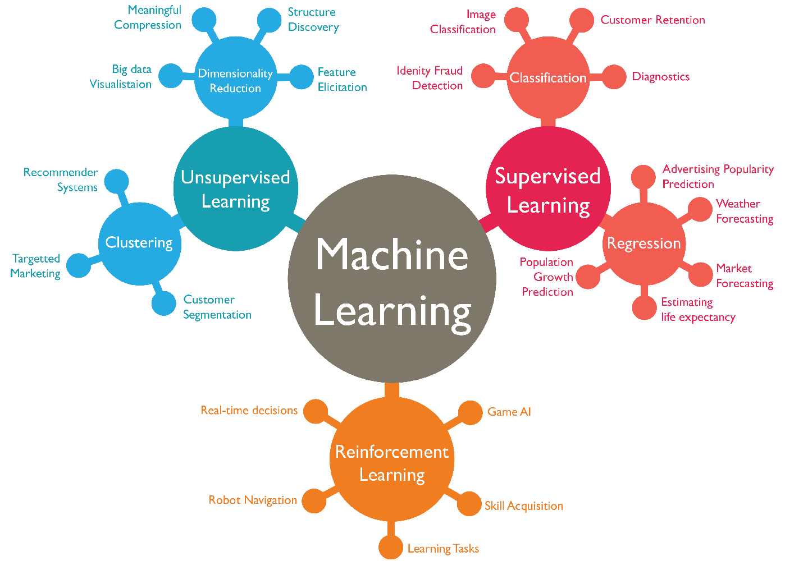
1. L'Apprentissage Supervisé : Le Maître et l'Élève
C'est la forme d'apprentissage la plus répandue dans l'industrie. Ici, la machine apprend à partir d'un jeu de données étiqueté (labeled data). Imaginez un élève devant un manuel où chaque exercice est accompagné de sa solution.
Le mécanisme : L'algorithme reçoit des entrées (X) et les sorties correspondantes (Y). Son but est de découvrir la fonction mathématique f telle que f(X) = Y.
La finalité : Une fois entraîné, le modèle est capable de prédire la sortie pour de nouvelles données qu'il n'a jamais vues. C'est ici que l'on retrouve la Régression (prédire un prix, une température) et la Classification (détecter un spam, identifier une pathologie).
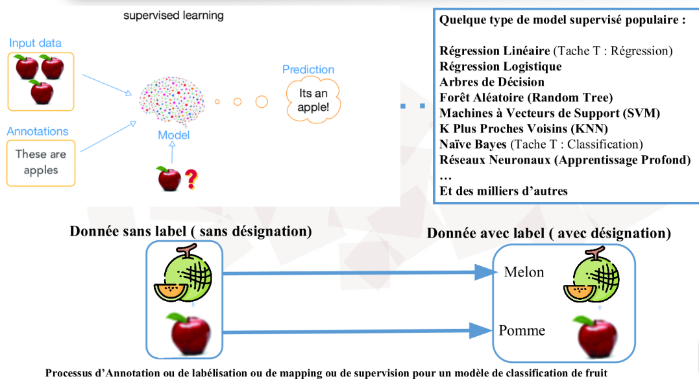
2. L'Apprentissage Non-Supervisé : L'Explorateur Autonome
Dans ce scénario, nous donnons à la machine des données brutes (X) sans aucune étiquette, ni solution. C'est l'apprentissage par la découverte pure. L'élève est laissé seul face à une pile de documents et doit y trouver une structure logique.
Le mécanisme : L'algorithme cherche des motifs cachés, des similitudes ou des structures géométriques dans la distribution des données. Il ne cherche pas à "deviner une réponse", mais à organiser l'information.
La finalité : C'est le domaine du Partitionnement (Clustering), où l'IA regroupe des clients par comportement, ou de la Réduction de dimension, où elle compresse une information complexe pour la rendre visualisable.
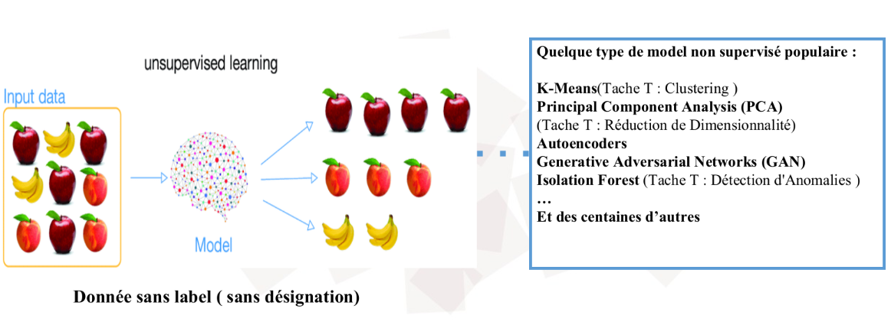
3. L'Apprentissage par Renforcement : L'École de l'Expérience
Cette troisième voie est radicalement différente. Il n'y a plus de dataset fixe, mais un Agent plongé dans un Environnement. C'est l'apprentissage par "essais et erreurs", exactement comme un enfant apprend à marcher ou à faire du vélo.
Le mécanisme : L'agent prend des actions, observe les changements d'état de son environnement et reçoit des récompenses (positives ou négatives). Son objectif est de maximiser la somme des récompenses au fil du temps en développant une stratégie optimale (la politique).
La finalité : C'est le moteur des systèmes de décision séquentielle : du pilotage de drones aux stratégies de jeu (AlphaGo), en passant par l'optimisation en temps réel des réseaux électriques.
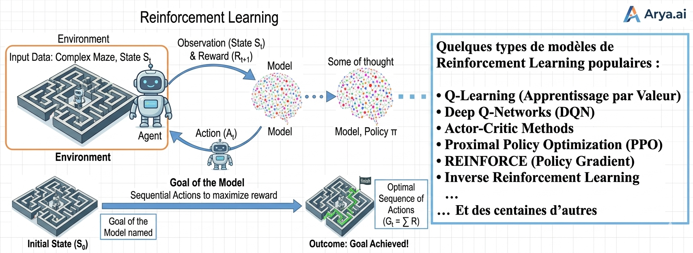
Pour bien sélectionner votre outil, posez-vous toujours cette question simple sur la topologie de votre problème :
Décision selon la nature des données et l'objectif
| Si ma donnée contient… | Et que mon objectif est de… | J'utilise… |
|---|---|---|
| Des exemples avec solutions (X, Y) | Prédire une valeur ou une catégorie | Apprentissage Supervisé |
| Des données brutes (X seul) | Découvrir des groupes ou des structures | Apprentissage Non-Supervisé |
| Un environnement dynamique | Apprendre une stratégie de décision | Apprentissage par Renforcement |
Au sein de chaque famille (Supervisé, Non-Supervisé, Renforcement), il existe une graduation technique. On distingue généralement deux grandes approches selon la structure mathématique de l'outil :
4. L'Éventail des Modèles : du Machine Learning au Deep Learning
Modèles souvent fondés sur la statistique et la géométrie, très efficaces sur des données structurées (tableaux Excel, bases SQL).
Apprentissage supervisé
Prédiction ou classification avec données labellisées.
- Régression linéaire
- Arbres de décision
- Random Forest
- SVM (Machines à Vecteurs de Support)
Apprentissage non supervisé
Structures ou motifs cachés dans des données non labellisées.
- K-Means (clustering)
- PCA (composantes principales, réduction de dimension)
- DBSCAN (clustering par densité)
Reinforcement Learning
Décisions optimales par essais-erreurs dans un environnement.
- Q-Learning
Réseaux de neurones profonds : ils excellent lorsque les règles sont trop complexes pour être écrites à la main. Adaptés aux images, sons et texte.
Supervisé
Tâches avec paires entrée–sortie (labels).
- CNN — classification d'images
- Transformers — traduction / LLM
- RNN / LSTM — séries temporelles
Non supervisé
Représentations, débruitage, génération.
- Auto-encodeurs — compression, réduction de bruit
- Modèles de diffusion — génération de contenu, espaces latents
Reinforcement learning
Politiques apprises par interaction.
- DQN — jeux type Atari
- Actor-Critic — robotique, conduite autonome
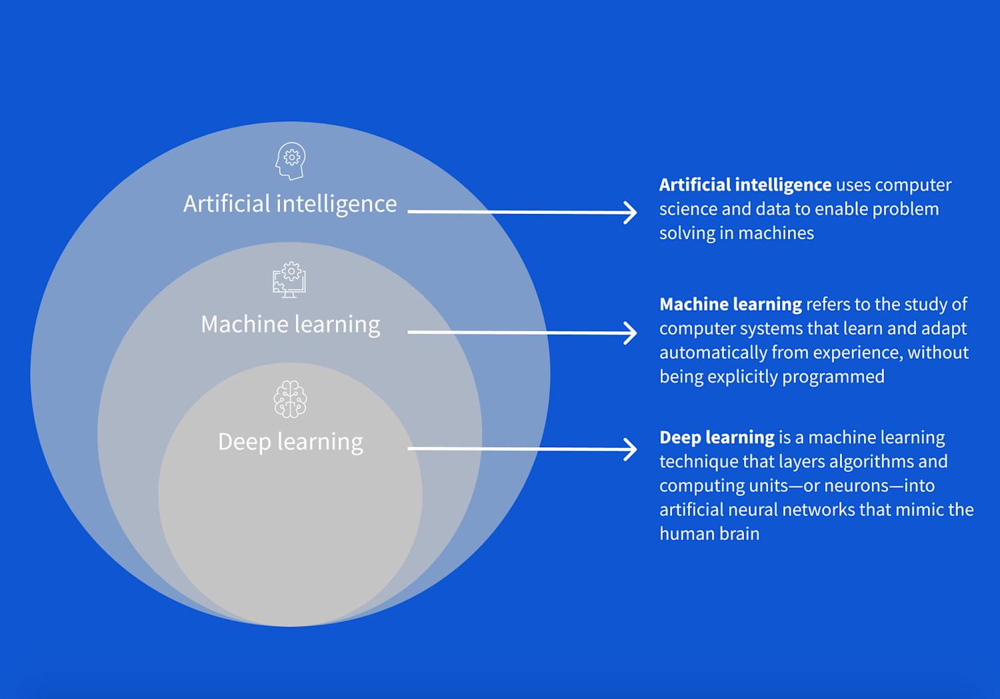
5. Le Choix de l'Outil : L'Art du Compromis
Choisir un algorithme n'est pas une question de "mode", mais de stratégie. En tant qu'architecte de solutions IA, votre choix se fera selon plusieurs critères fondamentaux :
- La Complexité des Données : Si vos données sont un simple tableau de 1000 lignes, un Random Forest sera souvent plus performant et plus rapide qu'un réseau de neurones complexe.
- La Transparence (Interprétabilité) : Dans des secteurs comme la santé ou la finance, vous devez pouvoir expliquer pourquoi l'IA a pris une décision. Un modèle linéaire est "transparent" (boîte blanche), tandis qu'un modèle de Deep Learning est souvent une "boîte noire" difficile à justifier.
- Les Ressources (Compute & Time) : Certains modèles s'entraînent en quelques secondes sur un ordinateur portable, d'autres nécessitent des clusters de GPU pendant des semaines.
- La Quantité de Données : Le Deep Learning a soif de données ; sans des millions d'exemples, il risque le "surapprentissage" (overfitting), là où un petit modèle robuste s'en sortira mieux.
Dans ce chapitre, nous allons donc explorer certains de ces algorithmes. L'objectif n'est pas seulement de comprendre leurs mathématiques, mais d'apprendre à identifier les avantages et les inconvénients de chacun.
Apprendre le Machine Learning, c'est apprendre à ne pas utiliser un "marteau-piqueur" pour enfoncer un "clou". À la fin de ce parcours, vous saurez exactement quel outil (ou modèle) sélectionner en fonction de la topologie de votre problème, de vos contraintes de production et des exigences de vos utilisateurs finaux.
Partie I — Apprentissage supervisé
1. Introduction : Le Schéma Universel du Supervisé
Malgré la diversité des algorithmes, de la simple droite aux réseaux de neurones complexes, l'apprentissage supervisé repose toujours sur le même protocole rigoureux. C'est une danse en trois temps entre la donnée, le modèle et l'erreur.
Les ingrédients (entrées et sorties) : On fournit au système des features (X, les caractéristiques comme la surface d'une maison) et des labels (Y, la cible comme le prix). Le but est de créer un modèle mathématique capable de lier les deux.
L'ADN du modèle (les paramètres w et b) : Chaque modèle possède des « poids » (weights) et un « biais » (bias). Ce sont les variables que l'IA va ajuster. Au départ, ils sont aléatoires ; à la fin, ils représentent la connaissance extraite des données.
En pratique, ces poids et ce biais ne sont pas de simples coefficients : c'est en eux que se fixe l'intelligence du modèle au sens opérationnel — la capacité à généraliser ce qui a été appris. C'est dans ces variables que se cache le secret : tout le savoir utile extrait des données y est condensé, sous une forme numérique que l'optimiseur affine pas à pas.
L'étape d'entraînement (la boucle) : L'IA fait une prédiction, mesure son erreur via une fonction de coût (loss), et utilise un optimiseur (descente de gradient) pour corriger ses paramètres.
La bifurcation majeure : Si la sortie Y est un nombre (prix, température), c'est une régression. Si Y est une catégorie (chat/chien, fraude/sain), c'est une classification.

2. La Régression Linéaire : La Droite Prédictive
Pour comprendre comment une machine apprend, il faut commencer par l'exemple le plus épuré possible. Imaginons que vous receviez un fichier Excel contenant l'historique des ventes immobilières d'un quartier. C'est un cas d'école de l'apprentissage supervisé : pour chaque exemple, vous possédez la réponse (le prix de vente). Comme vous cherchez à prédire un nombre continu, on parle de régression.
Le dataset brut
| Surface en m² (X) | Prix de vente (Y) |
|---|---|
| 30 | 120 000 € |
| 45 | 165 000 € |
| 60 | 210 000 € |
| 85 | 285 000 € |
Face à ce tableau, que fait un esprit humain (et que fera un data scientist) ? Il visualise. Si l'on place ces données sur un graphique — la surface sur l'axe horizontal, le prix sur l'axe vertical — on observe une nuée de points.
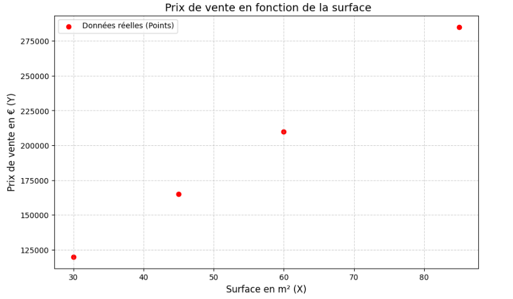
Instinctivement, notre cerveau repère une corrélation évidente : plus la surface augmente, plus le prix monte. Mieux encore, notre œil trace naturellement une ligne imaginaire au milieu de ce nuage de points pour résumer la tendance.
C'est ici qu'intervient la réalité du métier : dans la vraie vie, les points ne sont jamais parfaitement alignés. Un appartement de 60 m² au rez-de-chaussée coûtera moins cher qu'un 60 m² avec balcon au dernier étage. Les données sont « bruyantes ». Pourtant, malgré ces imperfections, nous pouvons abstraire cette réalité et la modéliser mathématiquement par une droite.
Cette droite mathématique qui traverse nos données pour en capturer la logique générale, c'est notre première intelligence artificielle. On l'appelle la régression linéaire.
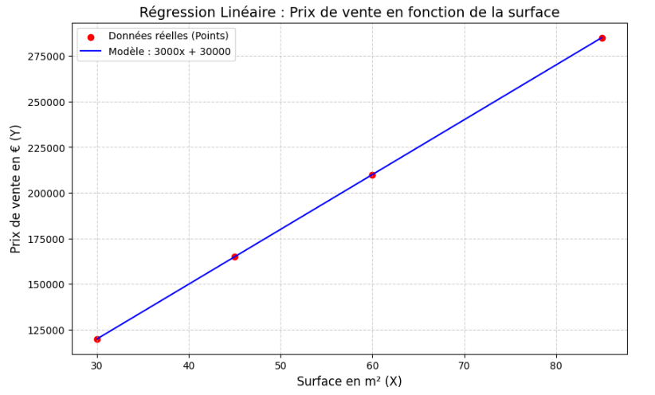
Maintenant que nous avons l'intuition géométrique, comment apprendre à un ordinateur, qui n'a pas d'yeux, à trouver cette droite parfaite de manière purement calculatoire ?
2.1 La Terminologie Fondamentale
Pour que la machine puisse apprendre, nous devons traduire notre droite visuelle en une équation mathématique simple :
Décodons ce vocabulaire, qui sera la base absolue de tout modèle, jusqu'aux réseaux de neurones les plus profonds :
- X (feature / caractéristique) : l'information d'entrée (la surface).
- Ŷ (prédiction / inférence) : ce que la machine devine (le prix estimé). Le « chapeau » rappelle que c'est une estimation du modèle, pas la vérité absolue du marché.
- w (weight / poids) : le coefficient multiplicateur (la pente de la droite). Il représente l'importance de X. Ex. : chaque mètre carré supplémentaire ajoute « w » euros au prix final.
- b (bias / biais) : l'ordonnée à l'origine. C'est la valeur de base, le point de départ de la droite. Ex. : le coût intrinsèque du terrain, même si la surface bâtie était de 0.
Le but de l'apprentissage automatique est de trouver les valeurs idéales de w et b. Au début de l'entraînement, la machine initialise ces paramètres totalement au hasard. La droite tracée est donc aberrante et les prédictions catastrophiques. L'IA va devoir s'améliorer étape par étape.
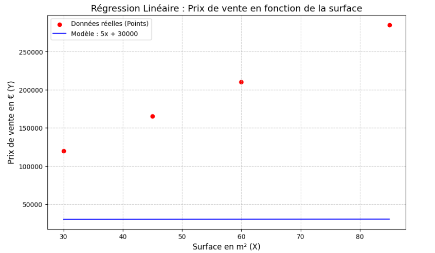
2.2 Mesurer l'Erreur : La Fonction de Coût (Loss Function)
Pour qu'un algorithme s'améliore, il doit d'abord pouvoir chiffrer sa propre erreur. C'est le rôle de la loss function. Pour une régression, on utilise le plus souvent l'erreur quadratique moyenne (MSE — Mean Squared Error).
L'ordinateur compare sa prédiction (Ŷ) avec le vrai prix historique (Y) pour chaque appartement du dataset. Il calcule la différence et la met au carré (cela évite que des erreurs négatives et positives ne s'annulent entre elles, et pénalise lourdement les grosses erreurs géométriques).
Si la loss est gigantesque, le modèle (la droite) est très éloigné des points.
Si la loss tend vers 0, le modèle a parfaitement compris la logique de la distribution.
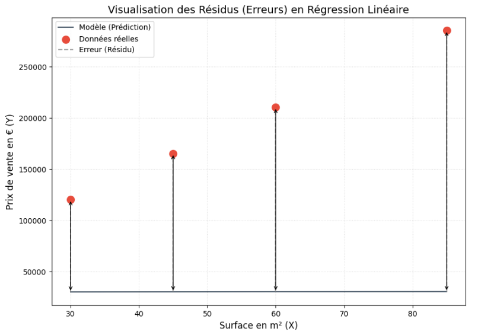
2.3 Pourquoi le « Carré » ? La Géométrie de l'Erreur
Vous vous demanderez peut-être pourquoi nous élevons l'erreur au carré au lieu de simplement prendre la valeur absolue (|Y − Ŷ|). La réponse réside dans la forme géométrique que cela crée, comme on peut l'observer sur le graphique « Géométrie de l'Erreur : MSE vs MAE » (figure ci-dessous).
En utilisant le carré, la fonction de coût (MSE, en bleu sur l'image) dessine une courbe convexe (en forme de bol ou de parabole). Cette forme est « parfaite » pour l'optimisation : elle ne possède qu'un seul point le plus bas, le minimum global (représenté par le point vert à w = 2). Cela garantit que notre algorithme ne restera pas bloqué dans un faux creux et pourra toujours « glisser » vers la solution idéale.
De plus, mathématiquement, une fonction au carré est « lisse » (dérivable partout), ce qui permet à l'ordinateur de calculer précisément la pente à chaque instant. À l'inverse, on remarque sur le graphique que la fonction MAE (en rouge pointillé) présente une cassure nette au niveau du minimum (un point « pointu »). Cette absence de dérivabilité au point critique rend les calculs d'optimisation beaucoup plus complexes et instables pour les algorithmes de descente de gradient.
Enfin, un avantage majeur du MSE illustré par la courbe bleue est sa sensibilité aux grandes erreurs : plus on s'éloigne du minimum, plus la courbe du MSE monte de manière exponentielle par rapport à celle du MAE. Cela signifie que le modèle « punit » beaucoup plus sévèrement les erreurs importantes, forçant ainsi l'algorithme à les corriger prioritairement pour atteindre la précision maximale.
Figure : Géométrie de l'Erreur — MSE vs MAE

2.4 L'Optimiseur : La Descente de Gradient (Gradient Descent)
Une fois que notre fonction de coût (MSE) a mesuré l'erreur du modèle, nous nous retrouvons face à un constat : notre droite est mauvaise. Mais dans quelle direction faut-il bouger le poids w pour qu'elle devienne meilleure ? Faut-il augmenter w ou le diminuer ? C'est ici qu'intervient le « cerveau » du système : l'optimiseur (souvent la descente de gradient).
1. Qu'est-ce qu'un gradient ? (La notion de pente)
En mathématiques, le gradient n'est rien d'autre que la dérivée de la fonction de perte par rapport à un paramètre (comme notre poids w). Pour visualiser cela, oubliez les chiffres un instant. Imaginez que vous marchez sur la courbe de perte (le fameux « bol » que nous avons vu précédemment).
- La variation : le gradient mesure comment la « perte » change si vous modifiez très légèrement w.
- L'indicateur de direction : par définition, le gradient pointe toujours vers la direction de la plus forte montée. Si le gradient est positif, cela signifie que pour augmenter l'erreur, il faut augmenter w.
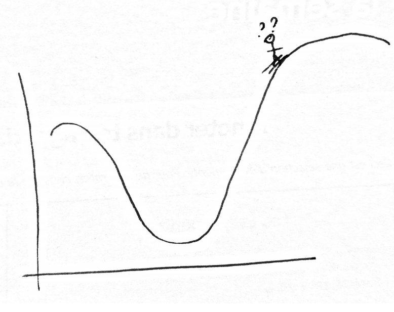
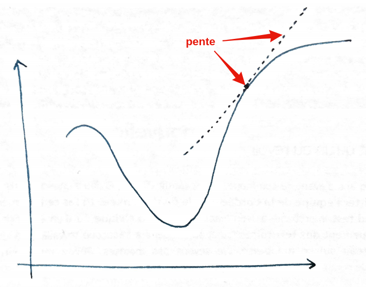
2. Décortiquer la formule de mise à jour
La formule que l'ordinateur répète des millions de fois est la suivante :
Chaque élément de cette soustraction a un rôle vital :
Le signe « moins » (−) : pourquoi soustraire ?
C'est le point le plus crucial. Comme nous l'avons dit, le gradient nous indique comment monter (augmenter l'erreur). Or, notre but est de minimiser l'erreur. Pour descendre, nous devons donc aller dans la direction opposée au gradient.
- Si la pente monte vers la droite (gradient > 0) : on soustrait, donc on déplace w vers la gauche.
- Si la pente descend vers la droite (gradient < 0) : soustraire un nombre négatif revient à additionner (− × − = +), donc on déplace w vers la droite.
Le signe « moins » est la boussole qui nous force à toujours descendre vers la vallée.
Le taux d'apprentissage (α) : la taille de la foulée — le gradient donne la direction, pas la distance. C'est α (le learning rate) qui fixe l'amplitude du pas.
- Si α est trop petit (p. ex. 0,0001) : le « randonneur » fait des pas de fourmi. L'apprentissage sera très précis mais prendra beaucoup d'itérations.
- Si α est trop grand (p. ex. 10,0) : des enjambées de géant risquent de faire sauter la vallée, d'atterrir sur le versant opposé et de s'éloigner du minimum (instabilité ou divergence).
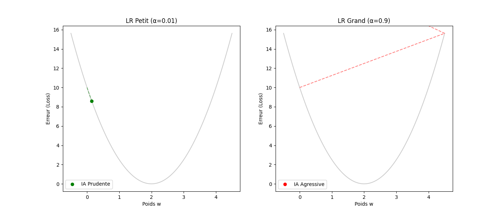
3. Guide pas à pas : le cycle de vie d'une itération
Voici comment l'algorithme « réfléchit » concrètement à chaque étape (ou step) :
- Tâter le terrain (calcul du gradient) : l'ordinateur calcule la dérivée de l'erreur. Il se demande : « Si je bouge w de 0,001, est-ce que l'erreur monte ou descend ? »
- Décider de l'effort (multiplication par α) : on pondère cette pente par le taux d'apprentissage pour décider de la force de la correction.
- Appliquer la correction (mise à jour) : on soustrait ce résultat au poids actuel pour obtenir le nouveau poids, un peu plus proche de l'optimum.
- Répéter jusqu'à la convergence : on recommence. Au fur et à mesure que l'on s'approche du fond de la vallée, la pente devient de plus en plus faible : le gradient diminue, et les pas ralentissent naturellement.
- L'arrêt : quand la pente est quasiment nulle (le sol est plat), on dit que le modèle a convergé. L'apprentissage est terminé.
4. Pourquoi est-ce « intelligent » ?
Ce qui rend ce processus puissant, c'est qu'il est autonome. Vous n'avez pas besoin de dire à la machine « augmente le poids ». Vous lui donnez une fonction d'erreur et une règle de descente, et la machine « glisse » mathématiquement vers la solution. C'est ce même mécanisme, bien que plus complexe (via la rétropropagation), qui permet aujourd'hui aux modèles de type GPT ou aux systèmes de vision par ordinateur d'ajuster des milliards de paramètres simultanément pour apprendre à parler ou à reconnaître des objets.
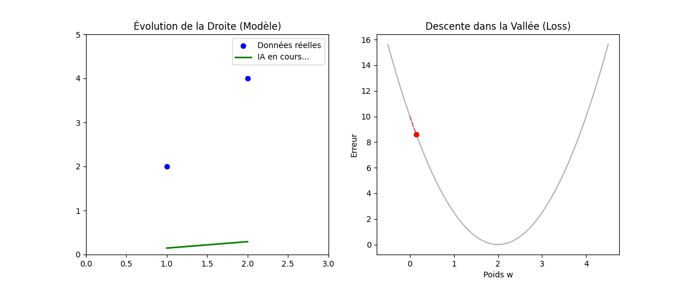
2.5 La Boucle d'Apprentissage (Training Loop)
Le processus d'« entraînement » d'une IA supervisée n'est au final que la répétition mécanique (les epochs) de ces trois étapes fondamentales :
- Forward pass : le modèle fait une prédiction avec ses poids actuels.
- Calcul de la loss : on évalue son degré d'erreur mathématique.
- Backward pass (optimisation) : on calcule le gradient et on ajuste les poids pour faire baisser l'erreur au tour suivant.
Conclusion : la régression linéaire en synthèse
Si l'on devait comparer les modèles d'IA à des êtres vivants, la régression linéaire serait un organisme unicellulaire. C'est l'IA dans sa forme la plus pure et la plus simple. Elle possède un « petit cerveau » composé de seulement deux paramètres : w (le poids) et b (le biais).
L'IA qui voit le monde en « lignes droites »
Cette IA a une vision du monde très spécifique : elle est convaincue que tout phénomène peut être expliqué par une relation proportionnelle. Pour elle, la complexité de la réalité (prix de l'immobilier, consommation d'énergie, croissance d'une plante) se résume à une droite infinie.
- Son intelligence : elle consiste à ajuster ses deux seuls paramètres (w et b) pour que sa droite traverse le nuage de données de la manière la plus centrale possible.
- Sa mémoire : elle ne stocke pas les données. Une fois entraînée, elle « oublie » les milliers de points qu'elle a vus pour ne garder que deux nombres : l'inclinaison de sa pente et son point de départ.
Pourquoi l'utiliser ? (Les avantages)
Malgré sa simplicité apparente, ce « petit cerveau » est l'un des outils les plus utiles en ingénierie pour plusieurs raisons :
- Interprétabilité totale (boîte blanche) : contrairement aux modèles complexes, on comprend exactement pourquoi l'IA a pris une décision. Si w = 10, on sait que chaque unité de X augmente Y de 10. C'est crucial en physique, en économie ou partout où l'on doit expliquer le résultat.
- Sobriété numérique : elle demande très peu de puissance de calcul et de mémoire. Elle peut tourner sur un microcontrôleur ou un smartphone modeste.
- Robustesse : sur de petits jeux de données bien structurés, elle est souvent plus fiable qu'un réseau de neurones qui risquerait de surapprendre le bruit.
Les limites du « petit cerveau »
L'intelligence de la régression linéaire s'arrête là où la complexité commence. Ses limites reflètent sa structure :
- Hypothèse de linéarité : le monde n'est pas toujours une droite. Si la relation entre vos données est plutôt courbe (exponentielle, sinusoïdale, etc.), le modèle sera « aveugle » à cette courbure : il forcera une droite là où elle n'est pas adaptée, ce qui peut produire un sous-apprentissage (underfitting).
- Sensibilité aux valeurs aberrantes : à cause du carré dans la MSE, un seul point extrême (p. ex. une maison vendue à dix fois son prix par erreur) peut attirer la droite comme un aimant et fausser la prédiction pour tous les autres points.
- Vision limitée pour les interactions complexes : elle peine à modéliser des situations où de nombreuses caractéristiques X s'influencent mutuellement de façon non linéaire.
Conclusion : la régression linéaire est votre point de départ — le modèle que l'on teste en premier. Si elle suffit, pourquoi s'encombrer d'un modèle plus lourd ? Si elle échoue, c'est souvent le signal que la « vérité » de vos données est plus riche qu'une simple droite, et qu'il est temps de passer à des modèles dotés de plus de paramètres — et donc de plus de flexibilité.
3. La Régression Logistique : La Porte d'Entrée de la Classification
Jusqu'ici, nous avons appris à tracer une droite qui prédit un nombre continu : un prix, une température, une consommation. Or, une grande partie des problèmes industriels ne demandent pas « combien ? », mais « lequel ? » : cet e-mail est-il un spam ? Ce patient est-il à risque ? Cette transaction est-elle frauduleuse ? La cible Y devient une étiquette de classe — souvent codée 0 ou 1 — et le modèle le plus simple pour aborder cette branche de l'apprentissage supervisé s'appelle, un peu paradoxalement, la régression logistique.
Le nom prête à confusion : il ne s'agit pas de prolonger une droite dans le temps, mais de régresser une probabilité à partir d'une combinaison linéaire des caractéristiques, puis de la contraindre dans l'intervalle ]0 ; 1[. Tout le reste — features, poids, biais, boucle d'entraînement, descente de gradient — reprend la même mécanique que vous connaissez déjà ; ce qui change, c'est la nature de la sortie et la fonction de coût adaptée aux probabilités.
3.1 Une autre cible : la classe au lieu du nombre
Imaginez un filtre anti-spam. Pour chaque message, vous disposez de variables X : présence du mot « urgent », nombre de liens, longueur du texte… La vérité que vous souhaitez prédire n'est pas un montant en euros : c'est une décision oui / non. On encode classiquement la classe « positive » (spam, défaut, malade…) par Y = 1 et l'autre par Y = 0.
Une régression linéaire « naïve » pourrait produire des valeurs comme −0,3 ou 1,7 : difficile à interpréter comme une chance d'appartenir à une classe, et mathématiquement mal adaptée au bruit typique des étiquettes. La régression logistique impose une discipline : le modèle ne sort plus un nombre quelconque, mais une probabilité estimée Ŷ ∈ ]0 ; 1[, lisible comme « confiance » du système dans la classe 1.
3.2 Le même squelette linéaire, une sortie resserrée : score et sigmoïde
Comme pour la droite prédictive, on commence par un score affine — la combinaison linéaire que vous savez déjà écrire :
Ici encore, w et b sont ajustés par l'apprentissage ; la nouveauté est la couche qui suit. On passe z dans la fonction sigmoïde σ, qui « comprime » toute la droite réelle dans l'intervalle ouvert entre 0 et 1 :

Lorsque z est très négatif, σ(z) se rapproche de 0 ; lorsqu'il est très positif, de 1 ; au voisinage de 0, la courbe est la plus pentue : c'est là que le modèle est le plus « indécis ». La prédiction finale s'écrit :
Autrement dit : la machine ne dit pas « oui » ou « non » brutalement ; elle rend un degré de conviction. C'est ensuite à vous (ou à une règle métier) de transformer ce nombre en décision — par exemple en fixant un seuil à 0,5 : au-dessus, on classe en 1 ; en dessous, en 0. Ce seuil n'est pas gravé dans le marbre : dans un contexte médical où l'on veut rater le moins possible les cas graves, on pourra l'abaisser pour déclencher plus d'alertes.
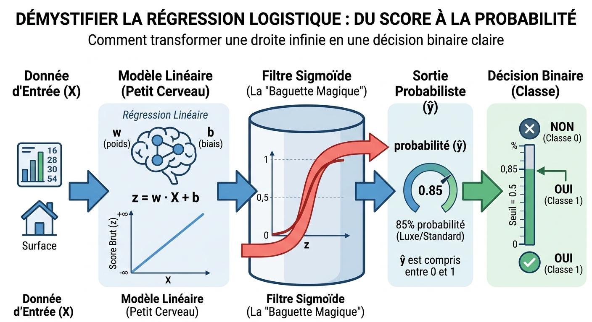
3.3 Pourquoi changer de fonction de coût ? (L'entropie croisée)
En passant de la prédiction de prix à la classification, l'objectif change : on ne cherche plus à minimiser une distance en euros, mais à maximiser la confiance du modèle dans la bonne réponse. La MSE (Mean Squared Error), si efficace pour ajuster une droite, devient ici un frein.
Sur le graphique suivant, on comprend immédiatement le problème :
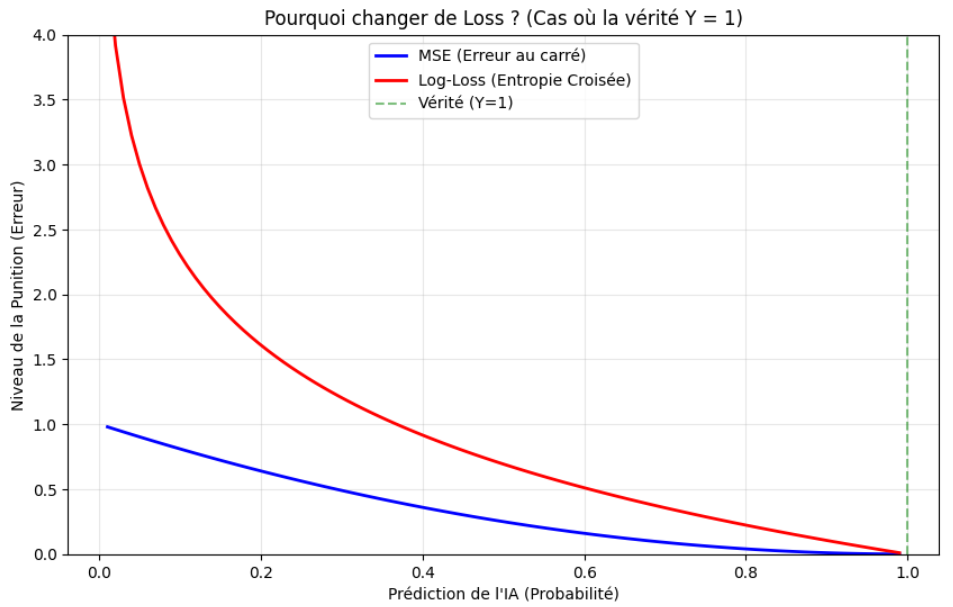
- Courbe bleue (MSE) : même si le modèle se trompe lourdement en prédisant une probabilité proche de 0 alors que Y = 1, l'erreur au carré reste bornée (elle ne dépasse pas 1,0 dans le pire cas). Le gradient — la pente du paysage d'erreur — devient très faible à gauche : le modèle reçoit peu d'instruction de correction alors qu'il est du mauvais côté.
- Courbe rouge (log-loss / entropie croisée) : lorsque la prédiction s'éloigne de la vérité, la perte croît très fortement ; lorsque Ŷ s'approche de 0 alors que Y = 1, la pénalité tend vers l'infini. Le modèle ne peut pas « se sentir à l'aise » dans une erreur confiante.
Pour évaluer la qualité d'un classifieur probabiliste sur un jeu de N exemples, on utilise la fonction de perte nommée "log-loss / entropie croisée" :
Le génie de cette formule est qu'elle « sélectionne » le bon terme selon la classe réelle :
Si Yi = 1 :
- Le terme (1 − Yi) s'annule ; il reste −ln(Ŷi).
- Si Ŷi → 1, alors ln(Ŷi) → 0 : peu d'erreur.
- Si Ŷi → 0, alors ln(Ŷi) → −∞ : avec le signe « − » devant, la perte devient très grande — le modèle est sévèrement puni.
Si Yi = 0 :
- C'est le premier terme qui s'annule ; seul −ln(1 − Ŷi) compte.
- On punit le modèle s'il s'approche de 1 alors que la vérité est 0.
Enfin comme pour la régression linéaire, on utilise la descente de gradient pour optimiser les poids. Le paysage a toutefois changé :
- Relief plus informatif : contrairement à la MSE, qui peut produire un plateau « mou » lorsque la probabilité prédite est très mauvaise, la log-loss maintient une pente forte là où l'erreur est grave — le gradient reste utile pour corriger.
- Descente guidée : le « randonneur » reçoit une correction d'autant plus marquée qu'il est du mauvais côté, ce qui favorise une convergence vers des probabilités mieux calibrées lorsque l'optimisation est bien réglée.
Conclusion : la régression logistique ou l'art de « trancher »
Si la régression linéaire était un organisme apprenant à mesurer, la régression logistique est ce même organisme apprenant à choisir. Elle possède toujours son « petit cerveau » (les paramètres w et b), mais elle a développé un nouveau filtre : la sigmoïde. Ce filtre lui permet de ne plus répondre par un nombre quelconque sur toute la droite réelle, mais par une probabilité entre 0 et 1.
L'IA qui voit le monde comme une « frontière »
Comme sa cousine linéaire, cette IA reste attachée à une géométrie simple : une combinaison linéaire des entrées. Mais la vision n'est plus celle d'une tendance à prolonger : c'est celle d'une séparation. Elle ne cherche pas d'abord une courbe complexe entre les points ; elle cherche une ligne de démarcation entre deux camps.
Figure : deux classes et frontière linéaire
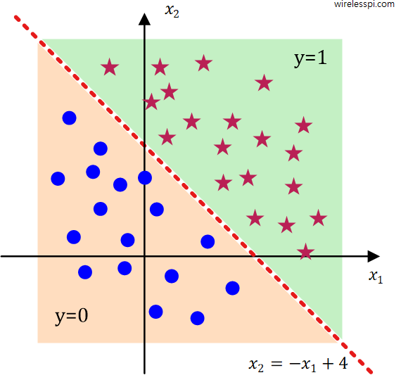
Comme on le voit sur cette illustration, l'intelligence du modèle consiste à tracer une « ligne dans le sable » — ici, une frontière que l'on peut résumer par exemple par l'équation suivante (les notations dépendent du repère choisi) :
- D'un côté de la frontière, le modèle classe les exemples comme appartenant à la classe « Étoile » (y = 1).
- De l'autre, comme « Point bleu » (y = 0) — les noms symboliques de la figure servent ici d'étiquettes pédagogiques.
Son intelligence : la frontière de décision
Sa force est de transformer un nuage de points en deux territoires lisibles. Sa mémoire reste sobre : une fois entraînée, elle ne retient pas la position de chaque individu dans la base ; elle retient l'emplacement de la frontière (en pratique, les paramètres qui définissent la droite — ou l'hyperplan — de séparation). Un nouvel exemple est classé instantanément selon le côté où il tombe.
Pourquoi l'utiliser ? (Les atouts)
C'est l'outil de référence de l'ingénieur pour la classification binaire lorsque la simplicité prime :
- Interprétabilité : on peut expliquer quels poids ont fait pencher la décision — utile pour un dossier accepté ou refusé, un score conformité, etc.
- Rapidité et légèreté : peu de ressources ; adapté au temps réel et aux systèmes contraints.
- Baseline solide : avant d'engager du deep learning, on compare souvent à cette droite (ou hyperplan). Si une séparation linéaire suffit, inutile de complexifier.
Les limites du « trancheur » linéaire
L'intelligence de la régression logistique a les défauts de sa simplicité :
- Rigidité de la droite : comme sur le graphique, la frontière « coupe » rectiligne. Si les classes sont entremêlées selon une forme circulaire, en spirale ou fortement non linéaire, le modèle restera en peine — on parle alors de sous-apprentissage ( underfitting) tant qu'on n'enrichit pas les entrées ou le modèle.
- Sensibilité au déséquilibre : avec 1 000 exemples d'une classe et très peu de l'autre, le modèle peut minimiser l'erreur en prédisant systématiquement la majorité — la minorité est alors ignorée. Il faut alors rééquilibrer les données, pondérer les classes ou adapter les métriques.
Conclusion : le premier test de vérité. La régression logistique est une sentinelle : on la lance en premier pour sonder la complexité d'un problème de classification. Si elle parvient à séparer les données comme sur la figure ci-dessus, vous avez une solution souvent élégante et auditable. Si elle échoue, le message est limpide : la frontière naturelle de votre problème n'est probablement pas une simple droite — et il sera temps d'offrir au système plus de flexibilité (features, modèles plus riches, non-linéarités).
4. Support Vector Machines (SVM) : L'Art de la Frontière
La régression logistique et la régression linéaire cherchent d'abord à ajuster des paramètres pour minimiser une erreur moyenne (MSE, entropie croisée) et produire une probabilité ou une valeur. Les machines à vecteurs de support (SVM) adoptent une autre philosophie, plus géométrique : lorsque les classes sont séparables (ou presque) dans l'espace des caractéristiques, on cherche l' hyperplan qui les sépare en laissant la plus grande marge possible entre les deux nuages — comme un couloir de sécurité entre deux foules.
Intuitivement : parmi toutes les droites (ou hyperplans) qui séparent deux classes, certaines « frôlent » trop près les points ; le SVM privilégie celle qui maximise la distance minimale aux exemples — ce qui, en pratique, favorise souvent une meilleure généralisation lorsque l'hypothèse de séparation reste pertinente.
4.1 Plusieurs « formes » pour un même principe
Un SVM n'est pas une seule équation figée : selon que les données sont séparables sans erreur, bruyantes, ou non linéairement séparables, on utilise des variantes qui gardent la même idée directrice — contrôler ou maximiser la marge — mais avec des hypothèses et des formules différentes :
- SVM linéaire à marge dure : les classes peuvent être séparées par un hyperplan sans aucun point dans la zone interdite ; on cherche le couloir le plus large possible.
- SVM linéaire à marge souple : le bruit ou le chevauchement impose des erreurs locales ; un paramètre C arbitre le compromis marge / fidélité aux étiquettes.
- SVM à noyau (souvent RBF) : la frontière utile n'est pas un hyperplan dans l'espace d'entrée ; on travaille dans un espace de plongement implicite via une fonction noyau.
Les sections 4.2 à 4.5 déroulent d'abord cette progression géométrique (intuition et illustrations). La section 4.6, placée avant la synthèse, regroupe sous un même toit comment l'ordinateur calcule la solution dans chaque cas : objectifs mathématiques, fonction de perte (hinge), forme duale, noyau, et optimiseurs (SMO, bibliothèques).
4.2 Marge dure : un couloir entre deux classes
En dimension 2, un modèle linéaire trace une droite de séparation ; en dimension plus élevée, c'est un hyperplan. Le SVM (version à marge « dure ») positionne cet hyperplan de façon que les points de chaque classe restent de part et d'autre, et que la bande entre les deux frontières parallèles (où aucun point ne doit pénétrer en séparation stricte) soit aussi large que possible. Cette largeur est la marge.
Les points qui touchent exactement les bords du couloir — ceux qui « coincent » la solution — sont les vecteurs de support. Ce sont eux qui déterminent l'hyperplan ; tous les autres points pourraient bouger légèrement sans changer la frontière tant qu'ils ne traversent pas la marge. D'où le nom : la machine est « supportée » par ces exemples critiques.
Figure : SVM linéaire — hyperplan, marges et vecteurs de support (données simulées)
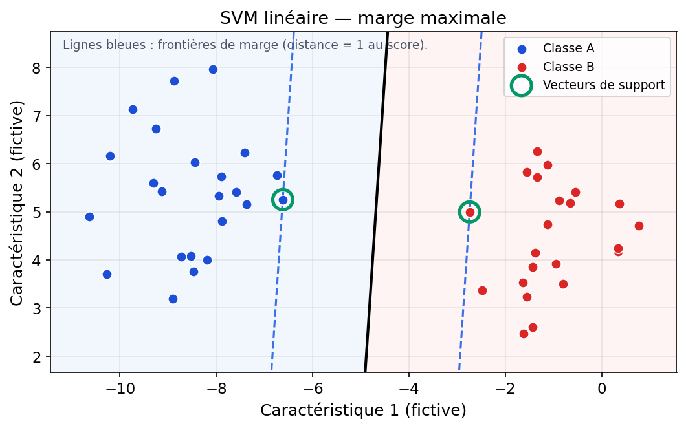
4.3 Marge souple et paramètre C
Dans la vraie vie, les classes se chevauchent ou le bruit fait traîner quelques points dans la zone interdite. On passe alors à la marge souple : on introduit des marges de tolérance (slack ξi) et un coefficient C qui arbitre le compromis suivant :
- C grand : on insiste pour classer correctement presque tous les points au prix d'une marge plus étroite — risque de sensibilité au bruit.
- C petit : on accepte davantage d'erreurs locales pour garder une marge plus large — frontière parfois plus stable en généralisation.
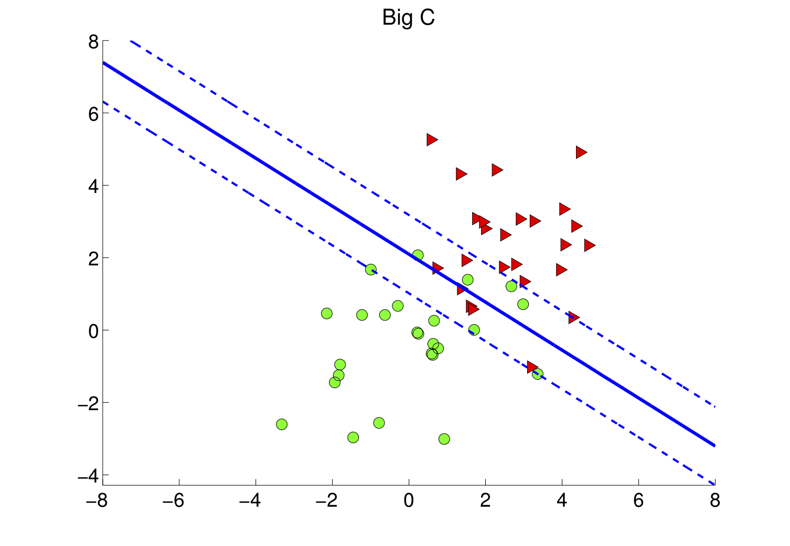
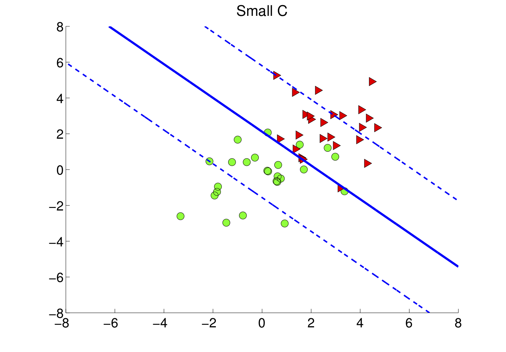
La figure suivante illustre un jeu plus bruité : le séparateur linéaire tolère des points mal placés tout en conservant une séparation globale lisible.
Figure : marge souple — données plus mélangées (simulation)
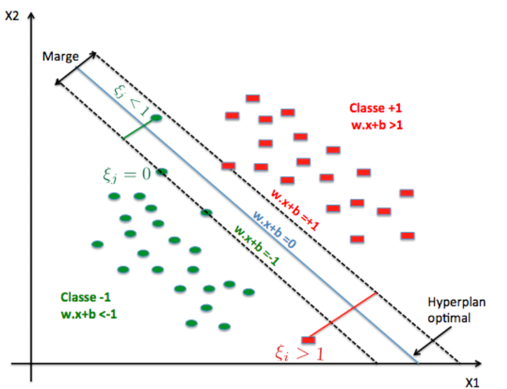
4.4 Noyaux : quand la frontière doit se courber
Si la frontière « naturelle » entre les classes n'est pas un hyperplan dans l'espace des entrées (séparateur linéaire impossible), une idée puissante consiste à plonger implicitement les données dans un espace de plus grande dimension où un hyperplan suffit — grâce à une fonction noyau (kernel) qui évite souvent de calculer explicitement cette projection. Le noyau RBF (gaussien) est très utilisé : il permet des frontières lisses et non linéaires.
Ci-dessous, deux classes en « anneaux » : aucune droite ne les sépare dans le plan ; un SVM avec noyau RBF peut tracer une courbe de décision qui les discerne.
Figure : SVM avec noyau RBF — frontière non linéaire (données simulées)
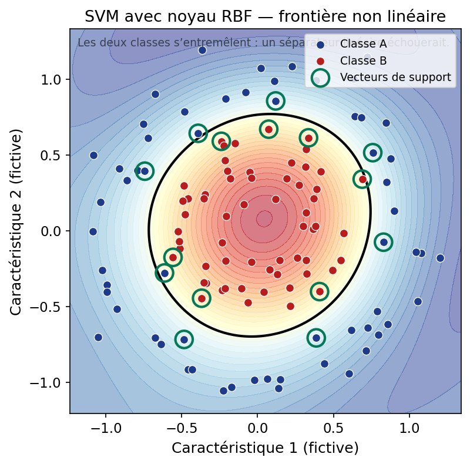
Trois vues pour l’intuition du noyau (gauche → droite)
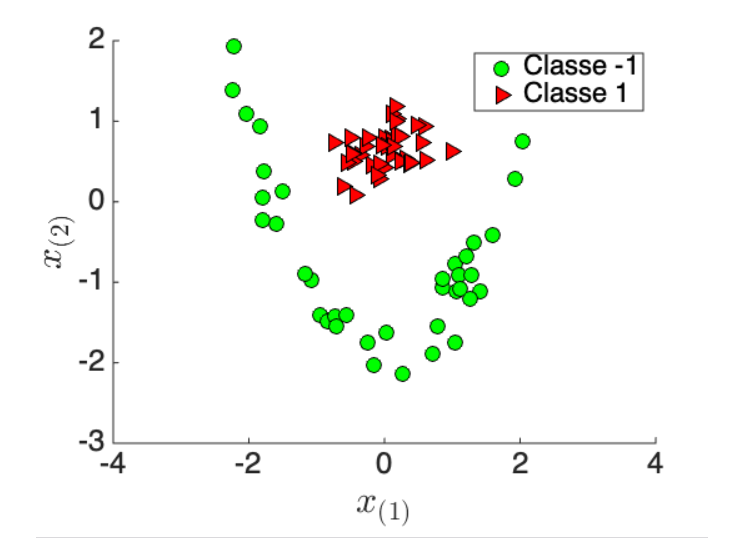
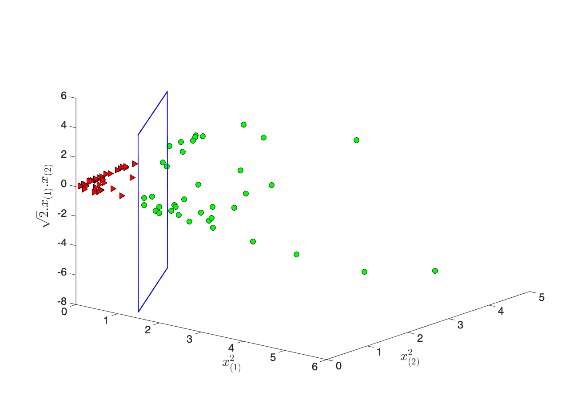
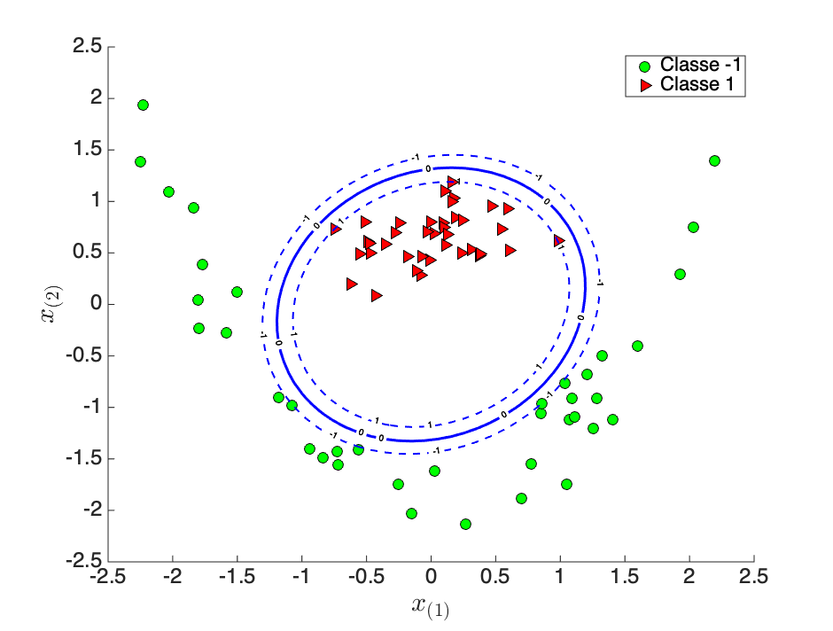
Passer du plan (2D) à l’espace 3D. Au lieu de travailler seulement avec x(1) et x(2), on associe à chaque point x = (x(1), x(2)) un vecteur Φ(x) en dimension 3 en « enrichissant » les coordonnées : les carrés x(1)2 et x(2)2, plus un terme croisé √2 x(1)x(2) (avec x(j) la j-ième variable du vecteur x). Intuitivement : on ajoute des directions qui codent des courbures et des interactions entre les deux axes — ce que ne peut pas faire une simple droite dans le plan d’origine.
Du plan séparateur en 3D au « cercle » dans le plan. Dans l’espace plongé, la SVM cherche encore un plan (un hyperplan) qui sépare les images Φ(x) des deux classes : c’est la même logique qu’une droite qui coupe un nuage dans le plan, mais ici la « coupure » vit dans la dimension 3. Et ici on cherche donc l’ensemble des x du plan dont l’image Φ(x) se trouve sur le séparateur en 3D (ce n’est pas « le plan 3D qui se retransforme »). Ces x sont les points de la frontière de décision vue depuis vos coordonnées d’origine ; ils satisfont une équation du second degré en x(1) et x(2) — d’où une courbe (cercle, ellipse, etc.), pas une droite, là où les deux classes en anneaux ne pouvaient pas être coupées par une ligne.
Et le noyau dans tout ça ? Pour comparer deux points après plongement, il faudrait en principe calculer le produit scalaire Φ(x) · Φ(x′). Or, pour le Φ ci-dessus, ce produit se réécrit uniquement avec les coordonnées d’entrée : Φ(x) · Φ(x′) = (x · x′)2 — le carré du produit scalaire usuel dans le plan. La fonction K(x, x′) = (x · x′)2 est précisément le noyau polynomial (degré 2) associé à ce plongement : elle remplace Φ(x) · Φ(x′) sans jamais former les trois coordonnées de Φ à la main. Intuitivement : le noyau répond à la question « à quel point ces deux points x et x′ seraient-ils alignés avec la même « richesse » non linéaire ? » en un seul nombre — et c’est ce nombre qui alimente l’entraînement du SVM (forme duale), au lieu de manipuler explicitement l’espace 3D.
4.5 À quoi sert une SVM ? Classification supervisée
Une SVM sert surtout à faire de la classification : apprendre une règle qui, pour un nouveau point dans l’espace des caractéristiques, prédit à quelle classe il appartient. Le cadre est supervisé : pour chaque exemple d’entraînement, on connaît déjà la classe (l’étiquette) — le modèle n’invente pas les groupes, il les apprend à partir d’exemples étiquetés puis généralise à de nouveaux points.
4.6 Comment ça s'entraîne ? Objectif, « perte » et optimiseur
Un SVM n'est pas tracé à la main : l'ordinateur résout un problème d'optimisation dont la forme dépend de la variante (sections 4.2 à 4.4). On utilise les étiquettes yi ∈ {−1, +1} et le score f(x) = wᵀx + b (linéaire dans l'espace de travail ; avec noyau, f s'exprime via la forme duale et K).
Rappel du fil : la marge dure (§ 4.2) correspond au problème primal le plus simple ; la marge souple (§ 4.3) ajoute des ξi et le poids C ; les noyaux (§ 4.4) s'obtiennent en passant au dual et en remplaçant les produits scalaires par K. Ce qui suit détaille, pour chaque étape, l'objectif, la perte hinge lorsqu'elle est équivalente, et la manière dont les solveurs (SMO, LIBSVM, etc.) trouvent les paramètres.
1. Formulation « marge dure » (séparabilité linéaire stricte)
On cherche l'hyperplan qui sépare les classes en maximisant la marge. Cela se reformule en problème d'optimisation convexe :
sous les contraintes : yi (wᵀxi + b) ≥ 1 pour tout i.
La contrainte impose que chaque point soit du bon côté avec une « marge fonctionnelle » au moins 1 ; minimiser ‖w‖² élargit la marge géométrique entre les classes.
2. Formulation « marge souple » (bruit, chevauchement)
On introduit des variables de relaxation ξi ≥ 0 (slack) et un coefficient C > 0 :
sous : yi (wᵀxi + b) ≥ 1 − ξi , ξi ≥ 0.
C pèse le compromis : pénaliser fortement les ξi (gros C) pousse à respecter les contraintes au prix d'une marge plus étroite ; un C plus petit tolère plus d'écarts.
3. Formulation du problème SVM non linéaire (noyau)
Lorsqu'aucun hyperplan ne sépare les classes dans l'espace des entrées x, on peut plonger les points dans un espace de caractéristiques de plus grande dimension via une application φ (souvent implicite) : les données deviennent φ(xi), et l'on cherche un séparateur linéaire dans cet espace — ce qui revient, dans l'espace d'origine, à une frontière non linéaire.
Plutôt que de calculer φ explicitement, on passe au problème dual : les contraintes et l'objectif ne font intervenir que des produits scalaires entre images φ(xi) · φ(xj). Le kernel trick consiste à les remplacer par une fonction noyau K(xi, xj) = φ(xi) · φ(xj) vérifiant les conditions de Mercer (ex. noyau RBF, polynomial). La matrice de Gram Kij = K(xi, xj) remplace les produits scalaires dans le dual ; la décision s'écrit comme combinaison des noyaux sur les vecteurs de support (coefficients duaux αi non nuls).
En pratique, on optimise les mêmes familles de solveurs (SMO, etc.) sur les αi avec contraintes de boîte et linéarité Σi αi yi = 0 ; seule la géométrie effective change, portée par K au lieu de xi · xj — comme déjà évoqué en § 4.4 (intuition géométrique).
4. Perte en charnière (hinge loss)
Une formulation équivalente très parlante minimise la somme des pertes « charnière » plus une régularisation sur w :
Ici yi f(xi) est la marge signée : si elle dépasse 1, la perte vaut 0 ; sinon elle croît linéairement. La courbe ci-dessous montre la fonction t ↦ max(0, 1 − t) avec t = yi f(xi).
Figure : forme de la perte hinge (données fictives pour le tracé)
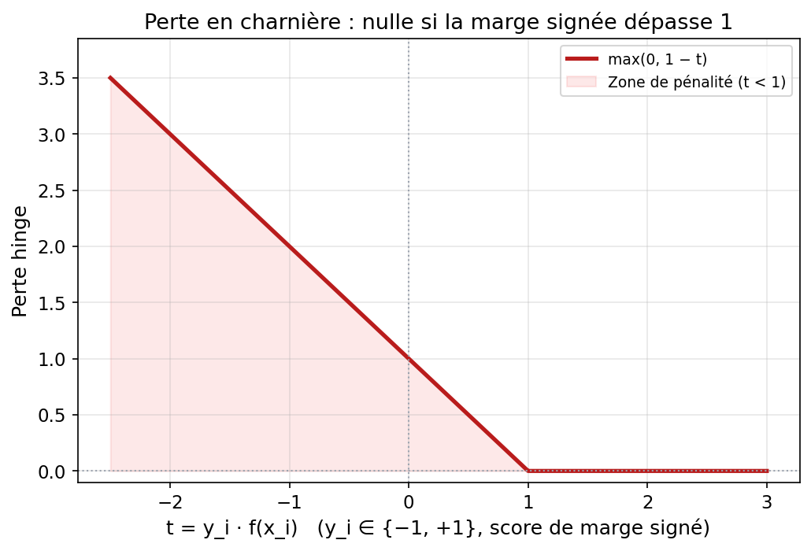
5. Optimiseur
Les implémentations classiques n'utilisent pas
la même boucle générique que la descente de gradient stochastique sur des millions de poids, mais des algorithmes de type SMO (*Sequential
Minimal Optimization*) : on met à jour à chaque étape de petits groupes de coefficients duaux (souvent deux α à la fois) en respectant les
contraintes, jusqu'à convergence. C'est l'approche popularisée par John Platt pour entraîner rapidement les SVM ; les bibliothèques
LIBSVM / LIBLINEAR et le module SVC de scikit-learn s'appuient sur ce type de méthodes ou sur des solveurs de
programmation quadratique adaptés.
Lien avec les points 1 à 3 ci-dessus : la marge dure se résout comme un programme quadratique sous contraintes linéaires (primal ou dual équivalent). La marge souple ajoute les multiplicateurs liés aux ξi ; l’objectif reste quadratique en w avec terme linéaire en les violations, et la hinge (point 4) en est la lecture « perte + régularisation ». Pour un noyau (point 3), on entraîne sur le dual en remplaçant les produits scalaires par K : les mêmes solveurs (SMO, etc.) s’appliquent aux coefficients αi, d’où l’efficacité du « kernel trick » sans construire la projection explicite.
En résumé : le SVM a bien un objectif mathématique (marge + pénalités) et un entraînement automatique par résolution numérique ; la logique « définir un critère et le minimiser » rejoint le reste du chapitre, avec des formules et des optimiseurs différents de la régression linéaire ou logistique.
En synthèse : la SVM dans votre boîte à outils
Par rapport à la régression logistique : même famille d'hypothèses (séparation souvent linéaire dans un espace choisi), mais critère d'entraînement centré sur la marge et la hinge loss plutôt que sur la log-vraisemblance ; l'optimisation est convexe et traitée par des solveurs dédiés. Les vecteurs de support jouent un rôle explicite dans la solution.
- Atouts : formulation convexe (problème bien posé en version standard), efficacité en dimension modérée à élevée avec noyau adapté, frontières non linéaires via noyaux sans concevoir à la main toute la transformation.
- Limites : coût de calcul qui peut croître avec le nombre de supports ; sensibilité au choix du noyau et des hyperparamètres ( C, γ pour RBF) ; très grands jeux bruts peuvent exiger d'autres approches.
Pensez la SVM comme un compas de géomètre : elle trace la frontière la plus « prudente » possible entre deux camps — tant que le terrain (les données projetées) le permet. Si ce n'est pas le cas, le noyau change d'échelle ; si le bruit domine, la marge souple et C règlent le compromis.
5. Arbres de Décision et Random Forest : La Force du Collectif
Jusqu'ici, nous avons traité nos données comme des points dans un espace géométrique, cherchant la "meilleure ligne" pour prédire une valeur ou séparer des classes. Mais l'esprit humain ne décide pas toujours en traçant des frontières mathématiques. Face à un problème complexe, nous procédons souvent par une série de choix binaires : Est-ce qu'il pleut ? Si oui, ai-je un parapluie ? L'Arbre de Décision marque le passage d'une IA "géomètre" à une IA "analyste". Contrairement au SVM ou à la régression logistique qui tentent de séparer les données d'un seul bloc, l'arbre de décision fragmente le problème. Il découpe l'espace en zones de plus en plus petites, créant une structure hiérarchique qui imite le raisonnement logique. C'est le premier pas vers les modèles non-paramétriques, capables de capturer des relations qu'une simple droite ne pourra jamais percevoir.
5.1 Arbre de décision : des règles emboîtées
1. L’anatomie d’un arbre (le vocabulaire)
Un arbre de décision est une suite de questions emboîtées. À chaque question, on « oriente » un exemple vers la suite du raisonnement, jusqu’à atteindre une décision finale. Pour bien le comprendre, il faut maîtriser son vocabulaire : il décrit à la fois la structure (ce qu’on voit) et le processus de prédiction (ce qu’on fait quand on l’utilise).
- Le nœud racine (Root Node) : c’est la première question, celle qui s’applique à toutes les données. Elle découpe l’ensemble initial en grands sous-groupes. Exemple : « Âge < 30 ? ».
- Les nœuds internes : ce sont les questions intermédiaires. Chaque nœud interne teste une variable (et souvent un seuil) pour affiner la séparation : « Revenu < 2500 ? », « Nombre d’achats ≥ 3 ? », etc.
- Les branches : ce sont les issues possibles d’un test. Dans le cas le plus courant, un test binaire produit deux branches : vrai / faux (ou oui / non). Chaque branche représente un sous-ensemble de données qui répond de la même façon à la question.
- Les feuilles (Leaf Nodes) : ce sont les nœuds finaux, là où l’on rend la décision. En classification, une feuille porte une classe prédite (souvent la classe majoritaire parmi les exemples arrivés dans cette feuille) ; en régression, elle porte une valeur (souvent une moyenne).
On peut lire un arbre comme une règle de type si… alors…. Par exemple : si (Âge < 30) et (Revenu < 2500), alors “Classe A”. Le chemin suivi depuis la racine jusqu’à une feuille est exactement la suite des conditions que l’exemple a satisfaites : c’est pour cela qu’on dit qu’un arbre est un modèle interprétable (une « boîte blanche »).
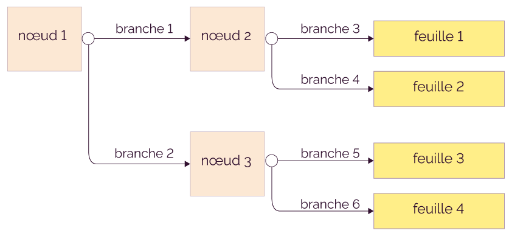
2. Le concept de partitionnement récursif
La logique profonde d’un arbre est celle du partitionnement récursif : au lieu de chercher une seule frontière globale, il découpe progressivement l’espace des données en régions de plus en plus petites. Chaque nœud ajoute une condition (un test), ce qui revient à scinder une région en deux sous-régions, puis à recommencer sur chacune d’elles.
En dimension 2, ces régions sont des rectangles. En dimension 3, des boîtes. Et, plus généralement, en dimension d, on parle d’hyper-rectangles. Pourquoi ? Parce que les tests d’un arbre (dans sa forme la plus courante) sont des comparaisons du type variable ≤ seuil, donc des coupures parallèles aux axes.
Visuellement, cela contraste avec un SVM linéaire : le SVM trace une frontière « d’un seul trait » (une droite, souvent perçue comme une diagonale), alors qu’un arbre construit une séparation par étapes, comme un escalier : une coupe verticale, puis une coupe horizontale, puis à nouveau verticale, etc. On obtient ainsi une frontière anguleuse faite de segments successifs, capable d’approximer des séparations non linéaires, au prix d’une forme moins “lisse”.
La figure suivante illustre ce principe avec un arbre peu profond (max_depth = 3) sur des données simulées en forme de
croissants : la frontière est déjà anguleuse, mais reste encore simple.
Figure : régions de décision d’un arbre peu profond (données simulées)
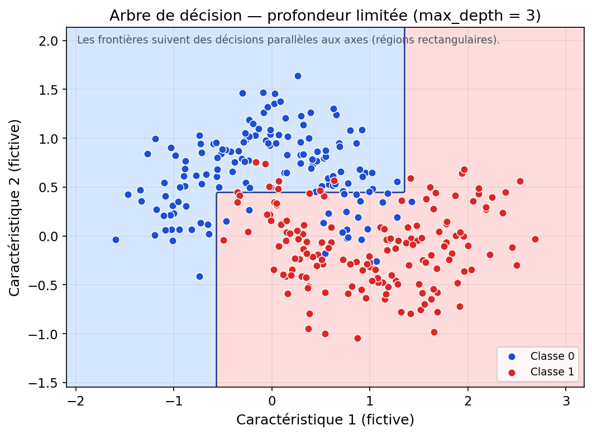
3. Le critère de choix : comment diviser ? (la pureté)
C’est le cœur de l’apprentissage d’un arbre : à chaque nœud, l’algorithme doit décider quelle question poser en premier. Concrètement, il teste de nombreux candidats (variable + seuil) et choisit celui qui rend les sous-groupes obtenus aussi purs que possible (c’est-à-dire contenant majoritairement une seule classe).
Pour quantifier cette idée de pureté, on utilise une mesure d’impureté. Deux choix classiques, très proches dans l’esprit, dominent en classification : l’entropie et l’indice de Gini.
-
L’entropie : mesure du désordre. Si un nœud contient des classes très mélangées, l’entropie est élevée ; si une seule
classe domine (nœud presque pur), l’entropie est faible. Si p_k est la proportion de la classe
k dans le nœud, alors :
H = − Σk pk log2(pk)
-
L’indice de Gini : interprétation “probabiliste” très intuitive. C’est la probabilité de mal classer un élément si l’on
attribue au hasard une étiquette selon les proportions du nœud. Sa formule est :
G = 1 − Σk pk2C’est le critère utilisé par l’algorithme CART dans de nombreuses implémentations.
Une fois une impureté choisie, il faut mesurer si une question (un split) est “bonne”. L’idée est simple : une bonne division doit réduire l’impureté globale. On compare donc l’impureté avant la coupure et l’impureté moyenne après la coupure.
C’est exactement le gain d’information (pour l’entropie) : si un nœud parent P est séparé en deux nœuds enfants L et R, on calcule :
On choisit la question qui maximise ce gain (donc qui diminue le plus le “désordre”).
Avec Gini, on applique la même logique (on parle souvent de réduction d’impureté) : on choisit la coupure qui fait le plus baisser G en moyenne pondérée.
4. L’algorithme d’apprentissage
Une fois le critère de “bonne coupure” défini (gain d’information, Gini…), l’apprentissage d’un arbre consiste à construire la structure nœud par nœud. Les algorithmes historiques — ID3, C4.5 et CART — suivent tous la même philosophie : répéter le même geste de décision locale sur des sous-ensembles de plus en plus petits.
Approche gloutonne (Greedy) : à chaque nœud, l’arbre choisit la meilleure question à l’instant T (celle qui maximise la réduction d’impureté) sans anticiper les coups suivants. Autrement dit, il ne cherche pas “l’arbre globalement optimal” parmi tous les arbres possibles (ce serait trop coûteux) ; il construit une solution efficace par une série de meilleurs choix locaux.
Schéma général (classification) :
- Étape 1 : au nœud courant, calculer l’impureté (entropie ou Gini) des exemples présents.
- Étape 2 : tester des candidats (variable + seuil), et mesurer la baisse d’impureté obtenue après séparation.
- Étape 3 : choisir la meilleure coupure et créer les nœuds enfants.
- Étape 4 : répéter récursivement sur chaque enfant (partitionnement récursif).
Condition d’arrêt : quand s’arrête-t-on de diviser ? Sans règle d’arrêt, un arbre peut continuer jusqu’à “tout expliquer”, y compris le bruit. En pratique, on stoppe la croissance quand l’un des critères suivants est atteint :
- Feuille pure (ou quasi pure) : tous (ou presque tous) les exemples dans le nœud appartiennent à la même classe, donc l’impureté est proche de 0.
-
Profondeur maximale : on impose une limite (
max_depth) pour éviter des règles trop longues et trop spécifiques. -
Trop peu d’échantillons : on interdit des divisions si le nœud contient trop peu d’exemples (p. ex.
min_samples_split) ou si une future feuille serait trop petite (p. ex.min_samples_leaf). -
Gain insuffisant : si la meilleure coupure n’apporte qu’une réduction d’impureté négligeable, on préfère garder une feuille (règle de
type
min_impurity_decrease).
La conséquence directe est un compromis : plus on laisse l’arbre grandir, plus il s’adapte finement au jeu d’entraînement ; plus on le contraint, plus on favorise une structure stable et généralisable.
Exemple guidé : « Dois-je aller jouer au tennis dehors ? »
Voici un petit dataset de 6 jours passés. La cible est Jouer ? (Oui/Non). L’arbre va chercher une première question qui réduit au maximum le désordre, afin d’aboutir à des feuilles pures (100% Oui ou 100% Non).
| Jour | Météo | Humidité | Vent | Jouer ? (cible) |
|---|---|---|---|---|
| J1 | Soleil | Haute | Faible | Non |
| J2 | Soleil | Haute | Fort | Non |
| J3 | Nuageux | Haute | Faible | Oui |
| J4 | Pluie | Normale | Faible | Oui |
| J5 | Pluie | Normale | Fort | Non |
| J6 | Nuageux | Normale | Fort | Oui |
Étape 1 : calcul du désordre initial (entropie). Avant de poser une question, l’algorithme regarde la cible : ici, 3 Oui et 3 Non. C’est un nœud très mélangé (50/50).
Étape 2 : tester des divisions (gain d’information / réduction d’impureté). L’algorithme évalue les variables candidates.
-
Test sur la Météo :
- Nuageux : (J3, J6) → 2 Oui, 0 Non → séparation parfaite.
- Soleil : (J1, J2) → 0 Oui, 2 Non → séparation parfaite.
- Pluie : (J4, J5) → 1 Oui, 1 Non → encore mélangé.
-
Test sur le Vent :
- Faible : (J1 Non, J3 Oui, J4 Oui) → encore mélangé.
- Fort : (J2 Non, J5 Non, J6 Oui) → encore mélangé.
Décision : la Météo est la variable qui réduit le plus le désordre ; elle devient le nœud racine.
Étape 3 : créer les branches et descendre. L’arbre trace ses premières branches :
- Branche Nuageux : feuille → verdict = Oui.
- Branche Soleil : feuille → verdict = Non.
- Branche Pluie : pas encore pur (1 Oui, 1 Non) → on continue uniquement sur (J4, J5).
Étape 4 : sous-division (récursivité). Sur les jours de Pluie, on peut tester Humidité ou Vent. Ici, Vent sépare parfaitement :
- J4 : Vent = Faible → Oui
- J5 : Vent = Fort → Non
L’arbre s’arrête : toutes les feuilles sont désormais pures.
Résultat final : la logique apprise. Le modèle a transformé le tableau en règles :
- SI Météo = Nuageux ALORS Jouer.
- SI Météo = Soleil ALORS Ne pas jouer.
-
SI Météo = Pluie :
- ET SI Vent = Faible ALORS Jouer.
- ET SI Vent = Fort ALORS Ne pas jouer.
5. Le fléau de l’arbre : le sur-apprentissage (overfitting)
Un arbre est un modèle très flexible : si on le laisse grandir sans contrainte, il peut continuer à découper jusqu’à isoler presque chaque observation. On peut alors obtenir des feuilles qui ne contiennent qu’un seul point (ou très peu de points) : l’arbre “apprend par cœur” les détails du jeu d’entraînement, y compris le bruit.
C’est le mécanisme typique du sur-apprentissage : excellente performance sur les données vues, puis dégradation sur des données nouvelles. En termes biais/variance, un arbre très profond a souvent un biais faible (il peut épouser des formes complexes) mais une variance forte (une petite modification des données peut changer fortement l’arbre appris).
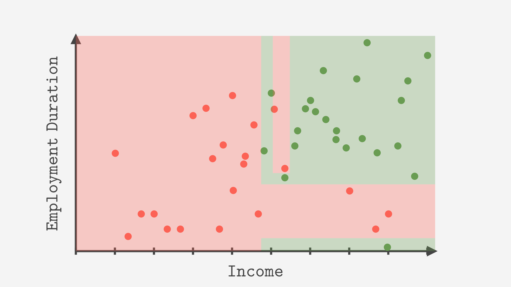
La solution : l’élagage (pruning). L’idée est de supprimer (ou d’empêcher) les branches qui n’apportent pas de gain significatif en généralisation : elles améliorent surtout l’entraînement, mais rendent la règle plus fragile.
-
Pré-élagage (pré-pruning) : on limite la croissance pendant la construction de l’arbre via
max_depth,min_samples_split,min_samples_leaf,min_impurity_decrease. - Post-élagage (post-pruning) : on laisse pousser un arbre plus grand, puis on coupe après coup les branches peu utiles. Dans CART, on rencontre souvent l’élagage par complexité de coût : on pénalise les arbres trop grands et on choisit la taille optimale par validation.
Intuition : une branche qui ne “gagne” que sur quelques points est souvent le signe qu’on modélise une exception locale. L’élagage force l’arbre à préférer des règles plus simples et généralement plus robustes.
6. Synthèse : Atouts et Faiblesses
-
Atouts :
- Totalement interprétable (modèle White Box) : chaque prédiction correspond à un chemin de règles « si… alors… ».
- Pas besoin de normaliser les données : les comparaisons par seuil ne dépendent pas d’une mise à l’échelle commune.
- Gère nativement le non-linéaire : les coupures successives construisent une frontière par morceaux.
-
Faiblesses :
- Instabilité : une petite modification des données peut changer fortement l’arbre appris.
- Tendance forte à l’overfitting si l’arbre est trop profond (d’où l’élagage et/ou les ensembles).
5.2 Random Forest : plusieurs arbres, un vote
Nous avons vu qu'un arbre de décision est un outil puissant et interprétable, mais il a un défaut majeur : il est instable. Une légère modification dans vos données d'entraînement peut changer toute la structure de l'arbre. C'est un modèle "sensible", capable d'apprendre par cœur les bruits de vos données (le sur-apprentissage). Pour corriger cela, nous ne changeons pas de logique, nous changeons d'échelle. Au lieu de confier la décision à un seul expert (un arbre), nous allons consulter une assemblée d'experts. C'est le principe de la Forêt Aléatoire : on crée des centaines d'arbres différents, et on fait voter la majorité. C'est ce qu'on appelle une méthode d'Ensemble Learning (Apprentissage par ensemble).
1. Le concept de Bagging (Bootstrap Aggregating)
Le bagging (pour Bootstrap Aggregating) est la première brique qui introduit du hasard dans une forêt. L’objectif est simple : si tous les arbres voient exactement les mêmes données, ils risquent de se ressembler et de faire les mêmes erreurs. Pour obtenir une “assemblée” utile, il faut des experts différents.
Le bagging combine deux idées.
-
Le bootstrap : on crée, à partir du dataset d’origine (taille n), plusieurs sous-échantillons en
effectuant un tirage aléatoire avec remise. Concrètement, chaque arbre est entraîné sur un “nouveau” dataset obtenu en tirant
n lignes au hasard :
- certaines lignes peuvent être tirées plusieurs fois (répétées),
- d’autres peuvent ne pas être tirées du tout (ignorées par cet arbre).
- L’agrégation : une fois tous les arbres entraînés, on combine leurs prédictions pour produire une réponse plus stable. Intuition : un arbre peut “déraper” sur un détail du bootstrap, mais la moyenne (ou le vote) de nombreux arbres tend à lisser ces dérapages.
On peut résumer la mécanique ainsi : Bootstrap → entraîner beaucoup d’arbres différents → Agréger pour obtenir une prédiction plus robuste.
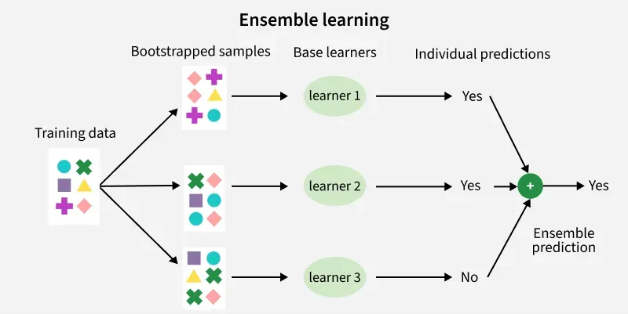
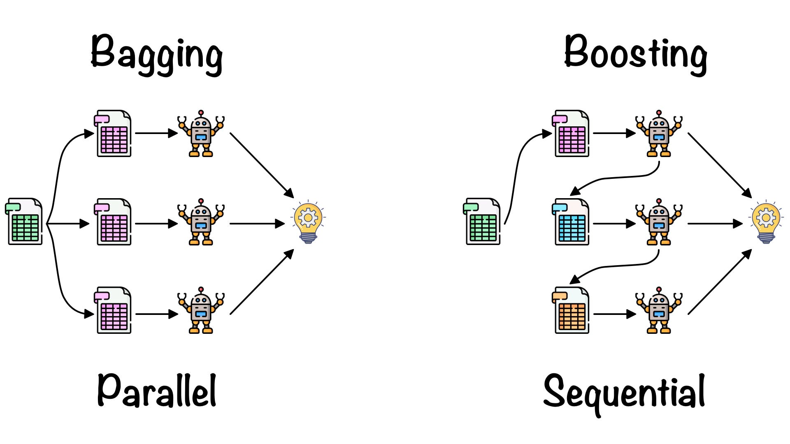
2. Le hasard au niveau des colonnes (Feature Randomness)
Le bagging rend déjà les arbres différents parce qu’ils ne voient pas exactement les mêmes lignes. Mais ce n’est pas encore suffisant pour rendre la forêt vraiment “aléatoire” : si une variable est très informative, beaucoup d’arbres risquent de choisir la même variable au sommet, et donc de se ressembler.
C’est ici qu’intervient le hasard au niveau des colonnes (les features).
- Dans un arbre classique, à chaque nœud on cherche la meilleure coupure en comparant toutes les variables disponibles.
- Dans une Random Forest, à chaque division, l’arbre n’a le droit de chercher la meilleure coupure que parmi un sous-ensemble aléatoire de colonnes. Autrement dit : on “cache” volontairement une partie des variables à chaque nœud.
Pourquoi ? Parce que cela force les arbres à explorer des pistes différentes. Une variable trop dominante ne peut plus “écraser” toutes les autres dans tous les arbres : certains arbres devront construire une bonne séparation en s’appuyant sur d’autres signaux. Résultat : les arbres sont moins corrélés entre eux, et l’agrégation (vote/moyenne) devient beaucoup plus efficace pour stabiliser le modèle.
En pratique, ce mécanisme correspond à un hyperparamètre du type max_features (combien de colonnes sont tirées au hasard à chaque nœud). C’est
l’une des clés qui rendent la forêt à la fois robuste et performante sur des données tabulaires.
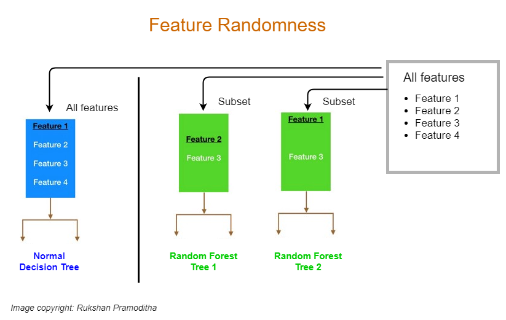
3. Le processus de vote (inférence)
Une fois tous les arbres entraînés, la forêt doit produire une prédiction finale. L’idée est d’agréger les décisions individuelles : chaque arbre donne une réponse, et la forêt combine ces réponses pour obtenir un résultat plus stable.
- Classification : la forêt applique un vote à la majorité. Par exemple, si 70 arbres prédisent “Oui” et 30 prédisent “Non”, la forêt répond “Oui”.
- Régression : la forêt prend la moyenne des valeurs prédites par tous les arbres (ce qui lisse les prédictions extrêmes).
4. Pourquoi ça marche ? (la réduction de la variance)
Un point contre-intuitif en machine learning est qu’un modèle “faible” peut devenir “fort” lorsqu’on en combine beaucoup. Un arbre seul, surtout s’il est profond, est souvent instable : il peut changer fortement si l’on modifie légèrement les données d’entraînement. C’est typiquement une signature de variance élevée.
La Random Forest exploite exactement ce point : en construisant des arbres différents (bootstrap + sous-ensemble de variables) puis en faisant une moyenne (régression) ou un vote (classification), on “annule” une partie des erreurs aléatoires de chaque arbre. Si un arbre se trompe à cause d’un détail du bruit, un autre arbre — entraîné sur un échantillon différent — ne fera pas nécessairement la même erreur.
C’est l’effet de lissage : au lieu d’une frontière très “hachée” et sensible (arbre unique profond), l’agrégation produit une frontière généralement plus régulière et une décision plus robuste. En bref : on échange un peu d’interprétabilité fine (un seul chemin de règles) contre une forte réduction de variance.
Figure : même jeu simulé — arbre unique très profond vs forêt aléatoire
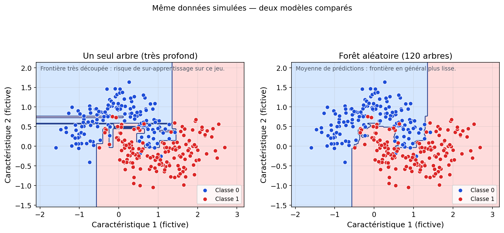
5. Un atout majeur : l’erreur Out-of-Bag (OOB)
Le bootstrap a une conséquence très pratique : chaque arbre n’est pas entraîné sur toutes les observations. Quand on tire n fois avec remise dans un dataset de taille n, une observation a une probabilité non négligeable de ne jamais être tirée pour cet arbre. En moyenne, environ 36% des lignes sont “laissées de côté”.
Ces observations non utilisées par un arbre s’appellent ses données Out-of-Bag (OOB). On peut donc s’en servir pour tester cet arbre immédiatement : on lui demande de prédire ses points OOB, puis on mesure l’erreur.
En répétant cette idée sur toute la forêt, on obtient une estimation globale : pour chaque observation, on agrège la prédiction uniquement des arbres qui ne l’ont pas vue à l’entraînement (ceux pour lesquels elle est OOB), puis on compare à la vraie cible. Cela fournit l’erreur OOB.
C’est une forme de validation croisée intégrée et “gratuite” : on obtient un indicateur de généralisation sans devoir, dès le départ, réserver un jeu de test séparé. (On garde néanmoins de bonnes pratiques : un vrai jeu de test final reste utile pour une évaluation impartiale.)

6. L’importance des variables (Feature Importance)
Même si une forêt est moins “lisible” qu’un arbre unique, elle fournit souvent un outil très utile d’interprétabilité : le classement des variables importantes. L’idée est de répondre à la question : quelles variables ont le plus aidé à réduire le désordre dans la forêt ?
Le mécanisme le plus courant (notamment dans de nombreuses implémentations de type CART) consiste à cumuler, pour chaque variable, la réduction d’impureté obtenue quand cette variable est utilisée pour une coupure, puis à moyenner sur tous les arbres. Intuition : une variable est jugée importante si elle apparaît dans des coupures qui rendent les nœuds enfants beaucoup plus purs.
Concrètement, on obtient un score par variable, puis on les trie : cela sert à prioriser des capteurs, guider une exploration, ou expliquer “ce que le modèle regarde” (sans prétendre à une causalité).
Attention toutefois : cette importance n’est pas une preuve de causalité, et elle peut être biaisée (variables corrélées, variables avec beaucoup de valeurs distinctes…). Pour une analyse plus robuste, on peut aussi utiliser l’importance par permutation : on mélange une variable et on mesure la chute de performance.
Figure : dix variables les plus importantes (Random Forest, jeu breast cancer)
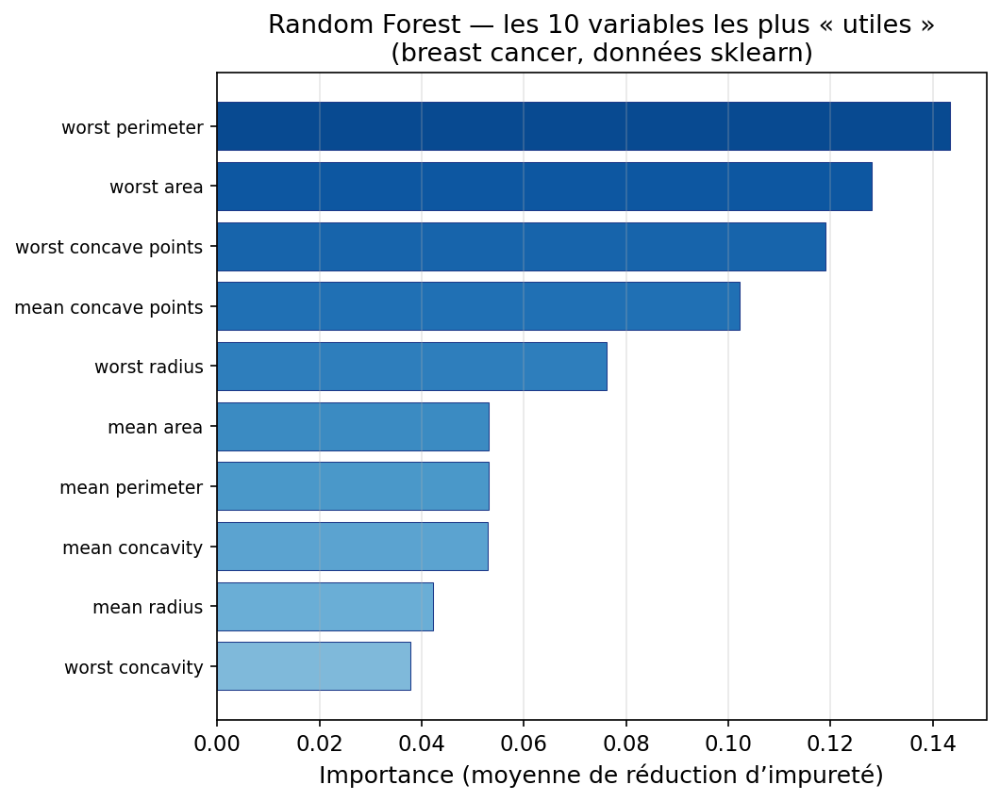
En synthèse : arbre et forêt dans la boîte à outils
Cette section marque surtout un changement de “vision du monde” dans l’apprentissage supervisé : on passe progressivement des modèles paramétriques (qui apprennent un nombre fixé de paramètres et imposent une forme globale) vers des modèles non paramétriques (dont la complexité s’adapte aux données). À noter : ils restent tous supervisés — on apprend toujours à partir de couples (X, Y) ; ce qui change, c’est la forme de la décision.
- Modèles linéaires (régression logistique, etc.) : ils “voient” le monde comme une droite (ou hyperplan) : une règle globale, simple, qui cherche à réduire une erreur (log-loss, MSE…). C’est souvent un excellent point de départ : rapide, stable, et facile à diagnostiquer.
- SVM : même famille géométrique (hyperplan), mais avec une philosophie différente : c’est un géomètre muni d’un compas qui cherche la séparation la plus “prudente” en maximisant la marge. La frontière est très contrôlée ; avec un noyau, on garde l’idée de marge mais dans un espace transformé.
- Arbre de décision : il “voit” le monde comme une suite de règles emboîtées (« si… alors… »). C’est un modèle non paramétrique (sa complexité augmente avec la profondeur) et naturellement non linéaire (frontières par morceaux). Atout majeur : l’explicabilité. Piège majeur : l’instabilité et le sur-apprentissage si l’on ne contrôle pas la croissance (pruning, contraintes).
- Random Forest : elle conserve la “vision” par règles, mais elle change d’échelle : au lieu d’un seul expert instable, on consulte une assemblée d’arbres entraînés sur des données/variables tirées au hasard. Le vote (classification) ou la moyenne (régression) réduisent fortement la variance : c’est souvent robuste et compétitif sans réglage extrême, et les importances de variables apportent un levier d’analyse pratique.
Et ensuite ? Les réseaux de neurones prolongent encore ce changement de représentation : ils ne tracent pas seulement une droite ou des rectangles, ils apprennent une composition de transformations (des couches) qui fabrique progressivement une représentation adaptée à la tâche. Autrement dit, après le géomètre (SVM) et le juriste des règles (arbres), on va voir un modèle qui “voit” le monde comme un empilement de filtres capables de construire des notions de plus en plus abstraites.
6. Les Réseaux de Neurones : l’approche bio-inspirée
Nous avons vu la régression logistique comme une porte vers la classification, puis les SVM et les arbres comme d’autres façons de tracer une frontière. Les réseaux de neurones prolongent une idée plus ancienne encore : imiter, très grossièrement, la manière dont des cellules nerveuses combinent des signaux pour produire une réponse. Ce n’est pas une simulation du cerveau — c’est un calcul organisé en couches, que l’on optimise par la donnée. Ce qui rend cette famille puissante, c’est la composition : chaque couche transforme l’information ; empilées, elles peuvent représenter des relations que ni une droite ni un seul arbre ne capturent facilement.
6.1 Inspiration biologique : signal, seuil, réponse
Dans une caricature utile du neurone biologique, des signaux arrivent par les dendrites, se cumulent au soma, et si le dépasse un certain niveau, le neurone « tire » un influx le long de l’axone. L’analogie informatique retient trois ingrédients : des entrées pondérées, une agrégation (souvent une somme), une non-linéarité ou un seuil qui décide si la sortie est active ou non. Le réseau de neurones artificiel ne modélise pas la chimie ni les spikes milliseconde par milliseconde : il s’agit d’un schéma de calcul.
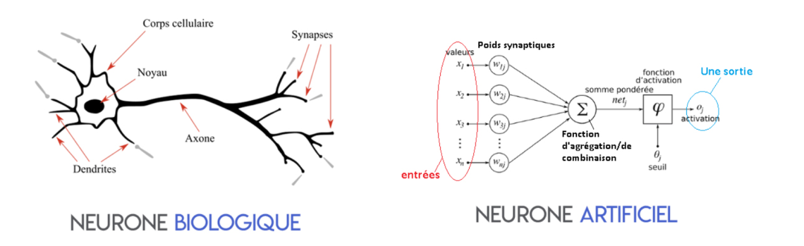
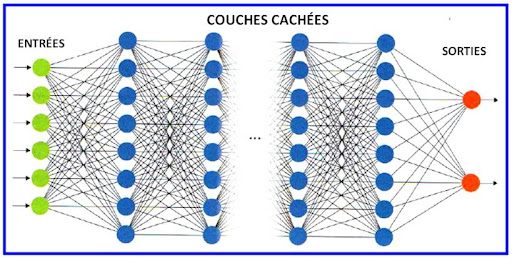
6.2 Le neurone artificiel : d’abord une régression logistique déguisée
Reprenez la section 3 : une régression logistique calcule un score z = wᵀx + b, puis applique la sigmoïde pour obtenir une probabilité. Un neurone de sortie en classification binaire avec fonction sigmoïde et entropie croisée, c’est exactement cette même brique mathématique : combinaison linéaire + activation. La figure ci-dessous résume le flux « entrées → combinaison linéaire → activation → probabilité ».
Figure : un neurone de classification binaire (sigmoïde) = même structure que la régression logistique
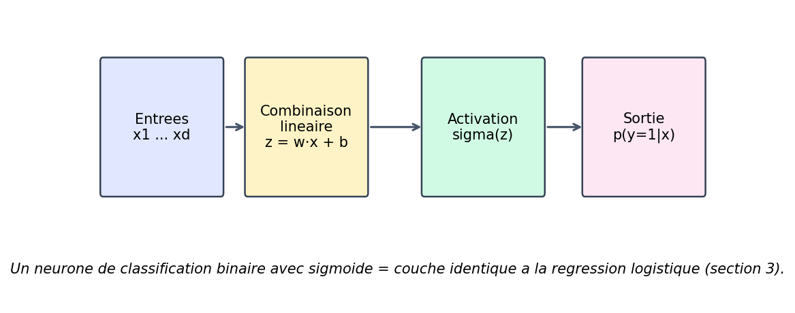
Dès que l’on empile des couches, chaque neurone caché refait le couple « somme pondérée + activation », mais son rôle n’est plus de donner directement une probabilité finale : il fabrique des caractéristiques intermédiaires que la couche suivante combine. La leçon à retenir pour plus tard : un neurone « classique » ressemble à une petite régression (logistique si la sortie est bornée entre 0 et 1) ; le réseau entier est une composition de ces briques.
6.3 Empiler des couches : vers le perceptron multicouche
Un perceptron historique correspond à une seule couche de décision linéaire (séparable). Le perceptron multicouche (MLP) intercale une ou plusieurs couches cachées : les entrées sont transformées, puis retransformées, jusqu’à la sortie. La figure suivante illustre une architecture minimale : deux entrées, trois neurones cachés, une sortie — suffisante pour fixer les idées ; en pratique les réseaux comptent des centaines ou millions de paramètres.
Figure : exemple de MLP (2 → 3 → 1)
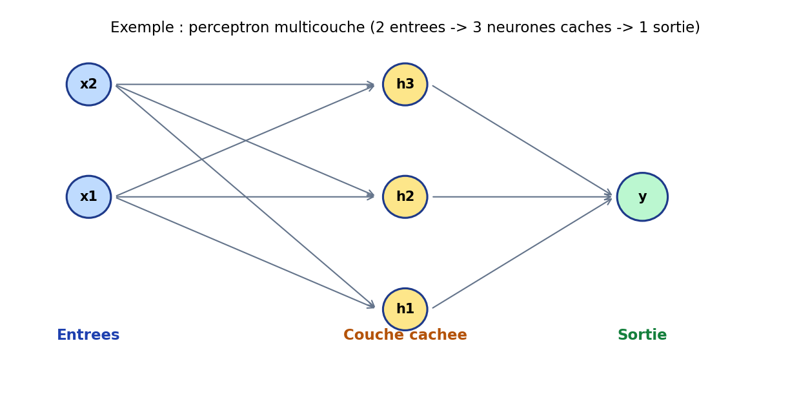
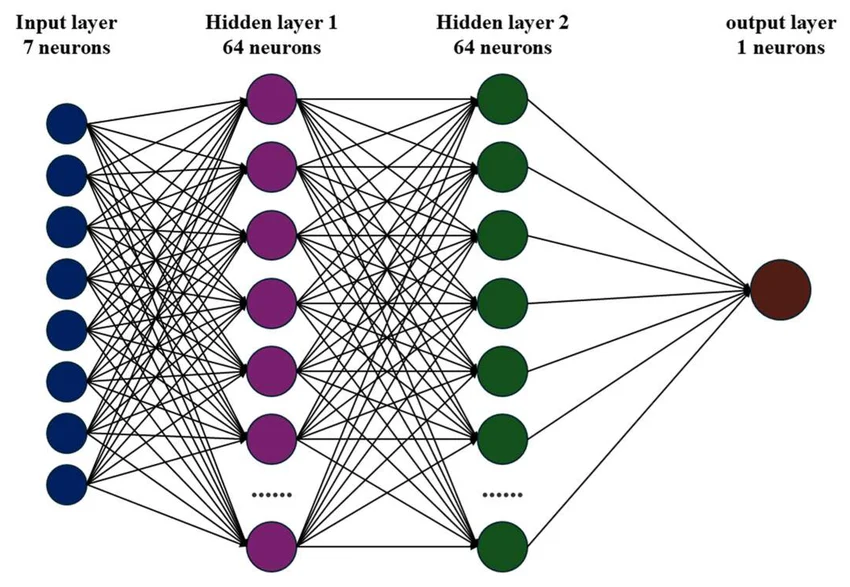
6.4 Pourquoi la non-linéarité est indispensable
Si l’on enchaîne des transformations purement linéaires sans activation non triviale entre les couches, l’ensemble reste équivalent à une seule transformation linéaire : on n’a rien gagné en richesse. Introduire ReLU, sigmoïde ou tanh casse cette équivalence et permet d’approcher des frontières courbes, des régions enclavées, des motifs qui se répètent.
Le cas d’école est le XOR : quatre points du plan, deux classes en diagonale. Aucune droite ne sépare les deux classes ; un classifieur linéaire (régression logistique sans enrichissement de features) échoue. Un petit MLP avec une couche cachée peut, lui, redessiner des régions non convexes. La figure suivante montre une solution typique après entraînement.
Figure : problème XOR — frontière possible avec un MLP
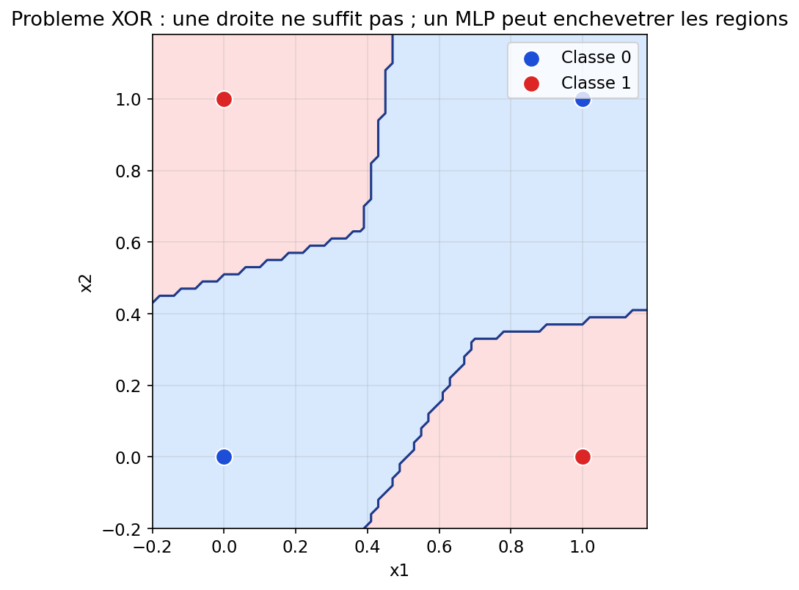
La figure suivante compare, sur des cercles imbriqués simulés, une régression logistique (séparation linéaire) et un MLP avec une couche cachée : même données, capacités différentes. C’est le même genre de constat que pour la SVM à noyau ou les arbres, sous une autre forme algorithmique.
Figure : régression logistique (gauche) vs MLP (droite) sur données non linéairement séparables
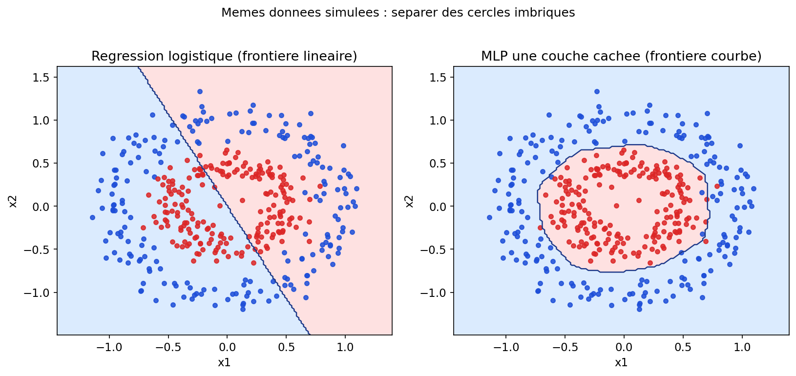
6.5 Fonctions d’activation : ce que chaque choix favorise
La sigmoïde comprime z dans ]0, 1[ : pratique pour interpréter une sortie comme probabilité, mais ses dérivées proches de zéro pour |z| grand peuvent ralentir l’apprentissage en profondeur (vanishing gradients). La tanh centre autour de 0. La ReLU max(0, z) est simple, souvent efficace, et entraîne des neurones « éteints » si z < 0 de façon prolongée — d’où des variantes (Leaky ReLU, GELU, etc.) dans la littérature récente.
Figure : sigmoïde, ReLU et tanh sur le même intervalle
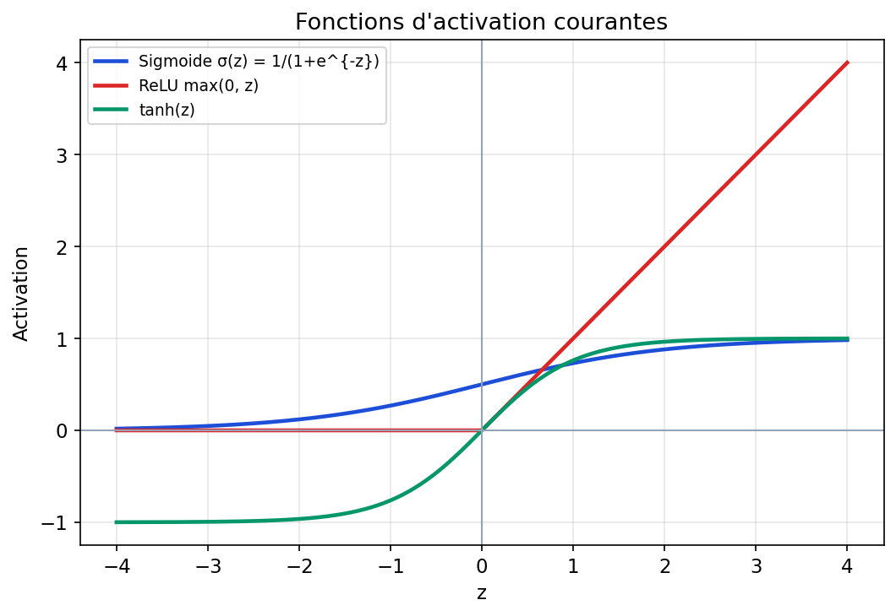
6.6 Entraînement : prédire, mesurer l’erreur, corriger
Comme pour la régression linéaire, le cycle fondamental reste : forward pass (calculer la sortie), loss (écart aux étiquettes), backward pass (gradients), mise à jour des poids — souvent par descente de gradient stochastique ou variantes (Adam, RMSprop…). La loss peut être MSE en régression, entropie croisée en classification, etc. Sur de grands jeux, on traite des mini-batches : compromis entre bruit utile et coût de calcul. La figure suivante montre l’allure typique d’une courbe de loss qui décroît puis se stabilise — pas toujours monotone à l’échelle du mini-batch, mais la tendance compte.
Figure : exemple de courbe de loss au fil des itérations
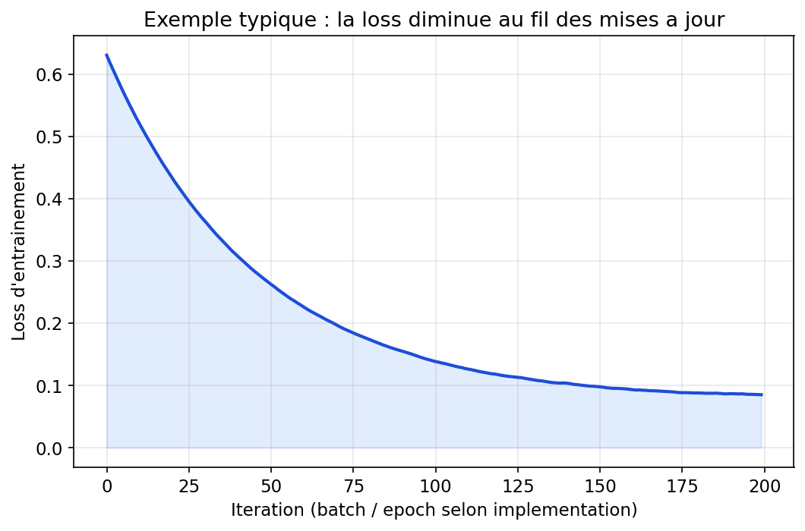
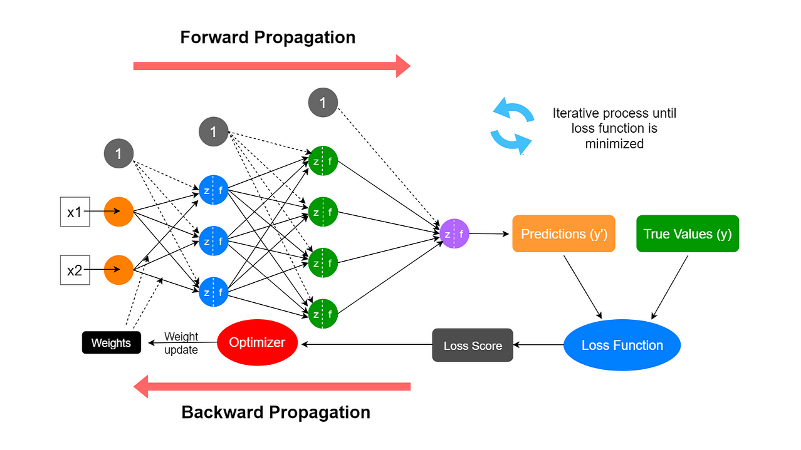
6.7 Rétropropagation : la règle de la chaîne, étage par étage
La rétropropagation n’est pas une « magie » : c’est l’application systématique du calcul différentiel en chaîne pour obtenir ∂L/∂w pour chaque poids. La loss L dépend des sorties, qui dépendent des activations précédentes, etc., jusqu’aux entrées. On propage les gradients depuis la sortie vers l’entrée (figure 57), ce qui permet d’attribuer une part de responsabilité à chaque poids — idée proche du « crédit assignment » en psychologie du conditionnement.
Figure : intuition — la loss se « décline » couche par couche
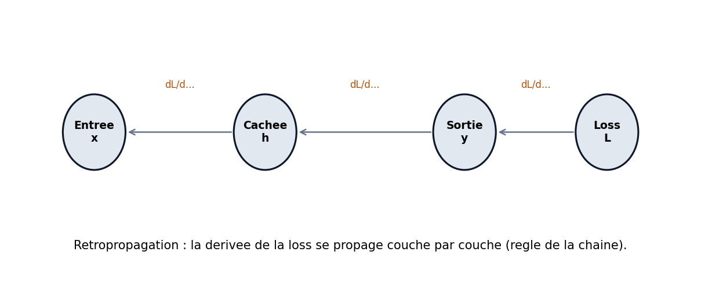
L’idée fondamentale est l’attribution du crédit (credit assignment) : si le modèle se trompe, quels poids sont responsables, et dans quelle mesure ? Pour répondre, on propage un signal d’erreur depuis la sortie vers l’entrée.
1) Le mécanisme de la règle de la chaîne
Considérons un neurone simplifié où la sortie a est le résultat d’une activation σ appliquée à une somme pondérée z. Pour un poids w, la loss L dépend de w via une cascade :
La règle de la chaîne dit que l’impact d’une variation de w sur L se calcule en multipliant des dérivées locales :
2) Décomposition étage par étage (réseau profond)
Dans un réseau profond, le même calcul se répète de couche en couche. Notons wjk(l) le poids reliant le neurone k de la couche (l − 1) au neurone j de la couche (l). On introduit une quantité centrale : l’erreur locale (souvent notée delta).
- L’erreur locale : δj(l) = ∂L/∂zj(l). Elle représente la “responsabilité” du neurone j (à la couche l) dans l’erreur totale.
- La remontée du gradient : l’erreur à la couche (l) se calcule à partir de la couche suivante (l + 1) :
3) Attribution du “crédit” (ou de la faute)
Une fois δj(l) connu, le gradient du poids wjk(l) s’écrit simplement :
Intuition : le gradient est le produit de l’activation d’entrée (le signal “aller”) par l’erreur locale (le signal “retour”). Si l’entrée ak(l-1) est nulle, le poids n’a aucune responsabilité dans l’erreur actuelle.
4) Synthèse algorithmique
- Forward pass : calculer et stocker toutes les sommes z et activations a.
- Erreur finale : initialiser le signal à la dernière couche (à partir de ∂L/∂asortie).
- Backward pass : propager les δ de droite à gauche.
- Mise à jour : l’optimiseur ajuste les poids (descente de gradient) : w ← w − η · (∂L/∂w)
Partie II — Apprentissage non supervisé : explorer la jungle sans étiquettes
Jusqu’ici, le fil du chapitre ressemblait à une leçon avec corrigé : régression, classification, SVM, arbres, réseaux — partout des exemples (xi, yi) où la cible y était connue. L’apprentissage non supervisé, lui, c’est une autre histoire : imaginez Mowgli dans la jungle — pas de manuel, pas de professeur qui nomme chaque animal ; il observe, se déplace, regroupe ce qui ressemble, découvre des régularités. Les données sont souvent un nuage de points sans étiquette : le but n’est pas de prédire une colonne cible, mais d’explorer la structure (groupes, densités, directions principales de variation).
Ce n’est pas du « hasard » : on définit toujours un objectif mathématique ou une hypothèse de forme (sphères pour K-means, densité pour DBSCAN, sous-espace pour PCA). Mais personne ne vous dit à l’avance combien il y a de classes ni ce qu’elles signifient — c’est vous qui interprétez les groupes ou les axes une fois le calcul fait.
Supervisé vs non supervisé (rappel de perspective)
| Question | Supervisé | Non supervisé |
|---|---|---|
| Donnée typique | Entrées + étiquette (classe, nombre à prédire) | Seulement les entrées (souvent un tableau ou des vecteurs) |
| Objectif | Minimiser une erreur de prédiction | Révéler structure : clusters, variabilité, représentation plus compacte |
| Métaphore | Élève avec le corrigé du manuel | Explorateur (Mowgli) sans noms — il cartographie le terrain |
Nous développons trois outils incontournables — chacun avec sa logique propre (détaillés ci-dessous dans l’ordre) :
- K-means : partitionner en k groupes en minimisant la dispersion autour de centres — idéal pour des nuages « ronds » et compacts lorsque k est raisonnablement choisi.
- DBSCAN : suivre la densité pour trouver des amas de forme arbitraire et repérer le bruit, sans fixer k à l’avance.
- PCA : trouver les axes où les données varient le plus — compression, décorrélation et visualisation.
1. K-means : regrouper autour de centres qui bougent
On se donne un entier k (nombre de groupes) et on cherche k centroïdes dans l’espace des caractéristiques. Chaque point est assigné au centroïde le plus proche (distance euclidienne usuelle) : on forme des clusters. L’idée est de minimiser l’inertie intra-classe (somme des carrés des distances point–centroïde de son groupe), aussi notée WCSS (Within-Cluster Sum of Squares) :
Algorithme de Lloyd (version standard) : on initialise les k centres (souvent k points tirés au hasard parmi les données) ; puis on alterne :
- Assignation : chaque point rejoint le cluster du centroïde le plus proche.
- Mise à jour : chaque centroïde devient le barycentre (moyenne arithmétique) des points de son cluster.
- Répéter jusqu’à ce que les affectations ne changent plus (ou que l’inertie se stabilise).
L’inertie décroît à chaque étape : le procédé converge, mais vers un optimum local — d’où l’intérêt de relancer plusieurs fois avec des
initialisations différentes (paramètre n_init dans scikit-learn). Si les vrais groupes sont bien séparés et « ronds », K-means retrouve souvent
une partition lisible.
Figure : partition en k = 3 groupes — points colorés par cluster, étoiles = centroïdes
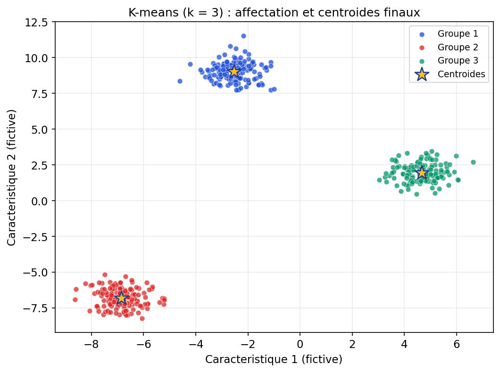
Figure : à initialisation défavorable, les centroïdes se rapprochent des vrais nuages en quelques itérations
Exemple calculé :
Nos données :
- Groupe 1 : P1(1,1), P2(1,2), P3(2,1), P4(2,2)
- Groupe 2 : P5(8,8), P6(8,9), P7(9,8), P8(9,9)
Étape 0 : Initialisation
On choisit deux centres au hasard, mais un peu « hors-jeu » pour voir le déplacement :
- μ1 (Rouge) : (0, 0)
- μ2 (Vert) : (10, 10)
Itération 1 : le premier grand saut
1) Assignation (Qui va où ?)
On calcule la distance de chaque point vers (0,0) et (10,10).
- Les points P1, P2, P3, P4 sont tous plus proches de (0,0). Ils rejoignent le Cluster 1.
- Les points P5, P6, P7, P8 sont tous plus proches de (10,10). Ils rejoignent le Cluster 2.
2) Mise à jour (Où vont les chefs ?)
On calcule le nouveau centre (barycentre) pour chaque groupe.
- Nouveau μ1 :
x = (1+1+2+2)/4 = 1.5, y = (1+2+1+2)/4 = 1.5 ⇒ μ1(1.5, 1.5)- Nouveau μ2 :
x = (8+8+9+9)/4 = 8.5, y = (8+9+8+9)/4 = 8.5 ⇒ μ2(8.5, 8.5)3) Calcul de l’inertie (WCSS)
À ce stade, l’inertie intra-classe est déjà faible car les centres se sont placés pile au milieu des nuages.
- Distance² de P1(1,1) à μ1(1.5, 1.5) = (0.5)² + (0.5)² = 0.5
- Pour les 4 points du Cluster 1, la somme est : 0.5 × 4 = 2.0
- Le Cluster 2 est symétrique : somme = 2.0
- WCSSTotal = 2.0 + 2.0 = 4.0
Itération 2 : la vérification de stabilité
L’algorithme de Lloyd ne s’arrête pas là : il doit vérifier si une meilleure configuration existe.
1) Assignation (Est-ce qu’un point veut changer ?)
On compare les distances entre nos points et les nouveaux centres μ1(1.5, 1.5) et μ2(8.5, 8.5).
- Prenez P4(2,2) : est-il plus proche de (1.5, 1.5) ou de (8.5, 8.5) ? Clairement du premier.
- Résultat : aucun point ne change de camp. Les clusters restent identiques.
2) Mise à jour (Est-ce que les chefs bougent encore ?)
On recalcule la moyenne des points pour chaque groupe.
- Comme les membres des groupes n’ont pas changé, le calcul de la moyenne redonne exactement les mêmes résultats : μ1 reste à (1.5, 1.5) et μ2 reste à (8.5, 8.5).
3) Stabilisation de l’inertie
L’inertie reste à 4.0. Elle ne peut plus diminuer.
Conclusion : convergence
L’algorithme s’arrête ici car :
- Les affectations n’ont pas changé.
- Les centres sont restés immobiles.
- L’inertie est stabilisée (minimum atteint).
L’intuition à retenir : l’itération 1 a fait le « gros du travail » en déplaçant les centres du néant (0,0) vers la réalité des données (1.5, 1.5). L’itération 2 a servi de « contrôle qualité » pour confirmer qu’on ne pouvait pas faire mieux. C’est ce qu’on appelle la convergence.
1.1 Choisir k : le piège du nombre de groupes
K-means ne déduit pas k : vous devez le choisir ou le comparer sur plusieurs valeurs. Un mauvais k peut fusionner des amas distincts ou au contraire découper un groupe naturel. La figure ci-dessous contraste k = 2 et k = 3 sur les mêmes données simulées à trois nuages.
Figure : même jeu de points — k = 2 impose une fusion ; k = 3 sépare mieux
Une heuristique classique est la méthode du coude : on trace l’inertie (ou WCSS) en fonction de k ; on cherche un « pli » où le gain de diminuer l’inertie en ajoutant un cluster redevient marginal. Ce n’est pas une règle automatique — le coude peut être flou — mais c’est un outil de dialogue entre le modèle et l’analyste.
Figure : courbe type « coude » de l’inertie en fonction de k
1.2 Limites et usages de K-means
Forme des clusters : la distance au centroïde favorise des groupes de taille et variance comparables ; des amas très allongés ou emboîtés peuvent être mal décrits. Sensibilité aux outliers : un point extrême peut tirer un centroïde. Échelle des variables : si une colonne est en grandes unités, elle domine la distance — souvent on normalise (z-score, min-max) avant de lancer K-means.
Interprétation : les étiquettes de cluster (0, 1, 2…) n’ont pas de sens intrinsèque : c’est à vous de les relier à un phénomène métier (segments clients, modes de défaillance…). L’exploration non supervisée est souvent une étape avant un modèle supervisé ou un rapport exploratoire.
K-means : points clés
- Idée : k centroïdes, assignation au plus proche, recentrage — minimisation de l’inertie intra-classe.
- Atouts : simple, rapide sur de gros volumes, implémentations matures (scikit-learn, Spark…).
- À surveiller : choix de k, optimum local, hypothèse de forme « sphérique », normalisation des variables.
2. DBSCAN : des régions denses sans fixer k
Là où K-means impose à l’avance un nombre de groupes et privilégie des amas « compacts » autour de centres, DBSCAN (Density-Based Spatial Clustering of Applications with Noise) part d’une autre intuition : un cluster, c’est une zone où les points s’accumulent suffisamment — comme une clairière dense dans la jungle. Deux paramètres pilotent l’algorithme :
- ε (epsilon) : rayon du voisinage autour d’un point ; deux points sont « voisins » si leur distance (souvent euclidienne) est ≤ ε.
- min_samples (ou MinPts) : nombre minimal de points (le point lui-même compris) pour qu’un point soit considéré comme point cœur (core point) — ancre d’un amas dense.
À partir des points cœur, on « étend » les clusters en chaînant les voisins atteignables ; les points qui ne sont ni cœur ni assez proches d’un cœur peuvent être classés en bruit (étiquette −1 en scikit-learn). Conséquence : on n’a pas besoin de connaître k ; le nombre de clusters émerge — au prix d’un réglage souvent délicat de ε et min_samples.
DBSCAN détecte bien des formes allongées ou non convexes (deux lunes, anneaux imbriqués…) là où K-means coupe parfois à la « truelle » selon ses centroïdes. En revanche, des densités très différentes d’un groupe à l’autre peuvent poser problème ; des variantes (HDBSCAN, OPTICS) existent pour aller plus loin.
Figure : DBSCAN exemple
Figure : même simulation — K-means avec k = 2 vs DBSCAN
Exercice guidé — DBSCAN, pas à pas
DBSCAN est un algorithme radicalement différent du K-means. Là où le K-means est un « gouvernement centralisé » (tout tourne autour des chefs/centroïdes), le DBSCAN est un mouvement de voisinage : on s’étend de proche en proche tant qu’il y a du monde.
Reprenons nos 8 points avec les réglages suivants :
- ε = 2 (le rayon de détection).
- min_samples = 3 (il faut être au moins 3 pour former un club « dense »).
1) Définitions : le statut des pointsAvant de commencer, DBSCAN doit juger chaque point :
- Point cœur (Core point) : il a au moins 3 voisins (lui inclus) dans son rayon de 2. C’est un moteur de cluster.
- Point frontière (Border point) : il n’a pas 3 voisins, mais il touche un point cœur. Il est accepté dans le groupe.
- Bruit (Noise) : il est tout seul et loin de tout point cœur.
2) Déroulement étape par étape (propagation) Étape 1 : exploration du premier nuageL’algorithme pioche un point au hasard, disons P1(1, 1).
Étape 2 : l’effet « tache d’huile » (expansion)
- Calcul du voisinage : qui est à une distance ≤ 2 de P1 ?
- P2(1,2) est à distance 1.
- P3(2,1) est à distance 1.
- P4(2,2) est à distance √(1² + 1²) ≈ 1.41.
- Verdict : P1 a 4 voisins (P1, P2, P3, P4). Comme 4 ≥ 3, P1 est un point cœur. Un nouveau cluster (ID=0) est créé.
DBSCAN va maintenant visiter les voisins de P1 pour voir s’ils peuvent agrandir le groupe.
Étape 3 : le saut vers le second nuage
- Il visite P2(1, 2) : P2 a aussi P1, P3 et P4 dans son rayon de 2. P2 est donc aussi un point cœur. Il propage le cluster.
- Même chose pour P3 et P4.
- Résultat : les points {P1, P2, P3, P4} forment le Cluster 0. Ils sont tous « cœurs » car ils sont dans une zone dense.
Mais comment DBSCAN sait si deux points cœurs sont dans un même cluster ?
Imaginons deux points cœurs, A et B. DBSCAN ne se demande pas s'ils sont proches l'un de l'autre dans l'absolu. Il se demande : « Existe-t-il un chemin de points cœurs entre A et B ? » Si A est dans le rayon $\epsilon$ de B, ils sont directement liés. Si A n'est pas dans le rayon de B, mais qu'il y a un point cœur C qui touche les deux, alors A et B sont fusionnés dans le même cluster. C'est exactement comme une réaction en chaîne ou une propagation de virus : si vous touchez quelqu'un qui touche quelqu'un d'autre, vous faites tous partie de la même « chaîne de transmission
L’algorithme cherche d’autres points non visités. Il arrive sur P5(8, 8).
- Calcul du voisinage : les points du premier groupe sont à une distance d’environ 9 (trop loin). En revanche, P6, P7 et P8 sont à une distance ≤ 2.
- Verdict : P5 a 4 voisins proches. P5 est un point cœur. Un second cluster (ID=1) démarre.
- Par propagation, P6, P7 et P8 rejoignent le Cluster 1.
3) L’intuition du bruit (le point « exclu »)Imaginons un 9ème point P9(15, 15).
- DBSCAN l’analyse : il n’a aucun voisin dans son rayon ε = 2.
- Il ne peut pas être un « cœur ».
- Il n’est pas non plus le voisin d’un « cœur » existant.
- Verdict : P9 est marqué −1 (bruit). Il est ignoré.
Interprétation pour nos données : ici, DBSCAN a « compris » qu’il y avait deux zones de forte activité séparées par un grand vide. Si nous avions ajouté des points dispersés, DBSCAN les aurait nettoyés automatiquement, là où K-means aurait essayé de les intégrer de force dans un groupe, quitte à fausser la moyenne.
Conclusion : DBSCAN vs K-means
- K-means est un algorithme d’optimisation : il a une fonction objectif (le WCSS) et il cherche à la minimiser.
- DBSCAN est un algorithme de recherche par voisinage : il ne cherche pas un score global minimum ; il suit une règle locale : « si j’ai assez de voisins, je m’étends ; sinon, je m’arrête ».
Si on veut forcer l’analogie, on pourrait dire que DBSCAN cherche à maximiser la connectivité de densité.
Au lieu de minimiser la distance par rapport à un centre, il valide deux conditions :
- La densité locale : est-ce qu’on respecte
min_samples? - La connectivité : est-ce que les points sont « atteignables » de proche en proche ?
Le fait de ne pas chercher à minimiser une distance globale (comme le WCSS) lui permet de réussir là où K-means échoue :
- Pas de forme imposée : K-means minimise la distance au carré, ce qui crée mathématiquement des formes circulaires. DBSCAN peut suivre des formes de serpents, de croissants ou de cercles concentriques.
- Indifférence au bruit : K-means doit inclure chaque point. DBSCAN préfère exclure un point qui ne respecte pas la règle de densité, plutôt que de tenter de l’optimiser.
Comme DBSCAN ne minimise pas une fonction mathématique globale, il n’a pas de « score » automatique (comme l’inertie) pour vous dire si vos paramètres sont bons.
- En K-means, vous regardez la courbe du coude (Elbow) pour voir quand l’inertie chute.
-
En DBSCAN, vous devez tester ε et
min_samplesà tâtons (ou utiliser des techniques comme le graphe des distances aux K-voisins), car il n’y a pas de WCSS pour vous guider.
En résumé : K-means est un comptable (il minimise les coûts/distances), tandis que DBSCAN est un explorateur (il trace les frontières d’une forêt tant qu’elle est dense).
3. PCA : réduire la dimension sans étiquettes
Imaginez que vous essayez de photographier un troupeau d'oiseaux en plein vol. Si vous prenez la photo de face, tous les oiseaux semblent entassés les uns sur les autres. Si vous prenez la photo d'en haut, vous voyez clairement la forme et l'étendue du troupeau.
La PCA fait exactement cela avec vos données.
Là où le partitionnement (comme K-means ou DBSCAN) cherche à créer des groupes distincts (des "familles" de points), la PCA cherche les meilleures directions pour observer vos données. Son but n'est pas de regrouper, mais de réorganiser l'espace pour mettre en lumière la structure la plus importante : là où ça change le plus.
L'intuition clé à retenir : Variabilité = Information. La PCA cherche les axes qui capturent le maximum de cette information.
La PCA est un algorithme non supervisé : elle “apprend” la géométrie interne de vos données brutes, sans étiquettes.
- Le centre : on calcule le barycentre et on centre les données (le centre devient l’origine).
- Rotation (PC1) : on cherche l’axe qui maximise l’étalement (la variance) des projections : c’est la direction où les données varient le plus.
- Orthogonalité (PC2) : PC2 doit être perpendiculaire à PC1 et capturer la variabilité restante.
- Nouveau repère : on exprime les données dans les coordonnées (PC1, PC2, …).

Mathématiquement, pour trouver ces axes sur des données centrées, on utilise une technique puissante appelée Décomposition en Valeurs Singulières (SVD). Elle permet d'extraire des "vecteurs propres" (les directions de nos axes PC) et des "valeurs propres" (la part de variance capturée par chaque axe). C'est comme si l'algorithme résolvait une équation pour trouver le "meilleur" angle de vue, ordonné par importance.
Si l’on imagine que votre nuage de points est un objet physique (comme une éponge ou un ballon de rugby), les vecteurs propres et les valeurs propres décrivent sa forme fondamentale.
- Vecteurs propres (v⃗) : ce sont les directions. Ils indiquent les axes de symétrie du nuage. Le premier vecteur propre pointe exactement vers là où le nuage est le plus étiré.
- Valeurs propres (λ) : c’est la force ou la longueur. Elles indiquent l’importance de chaque direction. Une grande valeur propre signifie que cet axe capture énormément d’étalement (de variance).
L’intuition : le vecteur propre est la « flèche » qui montre le chemin, et la valeur propre est le « poids » qui dit si ce chemin est une autoroute (beaucoup d’infos) ou un petit sentier (du bruit).
La PCA ne fait pas de descente de gradient comme un réseau de neurones ; elle suit un protocole algébrique rigide en 4 étapes clés :
Étape A : le centrage (standardisation)
Avant toute chose, on soustrait la moyenne à chaque point. On déplace le nuage pour que son centre de gravité soit à l’origine (0,0).
Étape B : la matrice de covariance
L’algorithme calcule comment les variables varient ensemble. Si la variable X augmente quand Y augmente, elles sont corrélées. Cette matrice résume toutes les relations du nuage.
Étape C : la décomposition (SVD ou diagonalisation)
C’est le « moteur ». L’algorithme résout l’équation suivante pour trouver les vecteurs propres (V) et les valeurs propres (L) :
À ce stade, l’algorithme a « appris » tous les angles de vue possibles et les a classés du plus informatif au moins informatif.
Étape D : la projection (réduction)
C’est l’étape finale. On choisit les k meilleurs vecteurs (ceux avec les plus grosses valeurs propres) et on projette les données originales sur ces nouveaux axes.
Comment choisir k ? l’éboulis des variances vous aide à décider combien en garder. L’idée est simple : c’est un graphique qui classe les composantes de celle qui contient le plus d’information (variance) à celle qui n’est que du « bruit ». On cherche visuellement le coude (l’endroit où la pente s’adoucit brutalement) : tout ce qui est avant le coude est conservé car cela capture l’essentiel de la structure des données, tandis que ce qui suit est sacrifié pour simplifier le modèle sans perte majeure de signal.
L’intuition de l’apprentissage : entraîner une PCA, c’est comme demander à l’algorithme : « Donne-moi la hiérarchie des dimensions ». Il ne cherche pas à prédire une valeur, il cherche à réorganiser votre espace pour que la première dimension soit la plus riche possible, la seconde un peu moins, et ainsi de suite.
Les avatanges de la PCA
L’Analyse en Composantes Principales ne se contente pas de simplifier vos tableaux de chiffres ; elle agit comme un filtre intelligent capable de transformer un chaos de données multidimensionnelles en une structure claire et exploitable.
Voici les principaux super-pouvoirs qui font de la PCA un outil indispensable :
- Visualisation de la haute dimension (le passage de l’invisible au visible) : c’est l’usage le plus spectaculaire. Face à un jeu de données comportant des dizaines ou des centaines de variables (par exemple, 100 caractéristiques sur des clients), l’esprit humain est incapable de se représenter la structure globale. La PCA identifie les deux ou trois axes principaux qui capturent le maximum de variance. En projetant les données sur ce plan 2D ou 3D, vous transformez un nuage abstrait en une carte lisible où les groupes cachés sautent enfin aux yeux.
- Compression et efficacité (garder l’essentiel, jeter le bruit) : la PCA permet de réduire drastiquement la taille de vos données tout en conservant l’information critique. En s’appuyant sur l’éboulis des variances (scree plot), on ne garde que les premières composantes qui « portent » le signal. Les composantes restantes, qui n’expliquent que des fractions minimes de variance, sont souvent considérées comme du bruit. C’est la technologie fondamentale derrière la compression d’images ou la réduction de flux de données massifs.
- Nettoyage de la redondance (lutter contre la colinéarité) : dans de nombreux domaines, les variables sont fortement liées entre elles (par exemple, l’âge et les années d’expérience). Cette redondance alourdit les modèles mathématiques inutilement. La PCA résout ce problème en créant un axe unique qui combine ces variables liées, éliminant ainsi les corrélations multiples pour ne garder que des axes parfaitement indépendants (orthogonaux) les uns des autres.
- Optimisation du machine learning (accélérer l’apprentissage) : utiliser la PCA comme étape de préparation avant un modèle de classification ou de régression offre deux avantages majeurs : cela réduit le temps de calcul et prévient souvent le « sur-apprentissage » (overfitting). En travaillant sur moins de dimensions mais avec un signal plus pur, vos algorithmes deviennent plus robustes et plus rapides.
- Mise en garde : la limite de la linéarité : il est crucial de se rappeler que la PCA est un outil linéaire. Elle « aplatit » les données sur des droites ou des plans. Si la structure de vos données est courbe ou enroulée (comme une spirale ou un beignet), la PCA risque de fusionner des points qui ne devraient pas l’être. Pour ces structures complexes, on préférera alors des méthodes non linéaires comme le t-SNE ou UMAP.
Bilan : explorer sans étiquettes, mais avec méthode
En conclusion, l'apprentissage non supervisé est avant tout une démarche exploratoire : c'est l'art de naviguer dans les données sans boussole (sans étiquettes y), en laissant les structures cachées émerger d'elles-mêmes. La véritable richesse de cette approche réside dans la diversité des regards portés sur le même nuage de points X. Chaque algorithme possède sa propre "vision" et son propre objectif :
- K-means voit le monde à travers des centres ; il cherche la simplicité et la rapidité en découpant l'espace en zones compactes (sphériques), au prix d'un nombre k imposé par l'utilisateur.
- DBSCAN voit le monde à travers la foule ; il ignore les centres et se concentre sur la densité. Il est capable d'épouser des formes complexes et irrégulières tout en nettoyant le bruit, à condition de bien régler le rayon ε.
- PCA voit le monde à travers le mouvement ; elle ne cherche pas de groupes, mais les directions (axes) où l'information est la plus étalée. Elle sculpte un nouveau repère pour simplifier et visualiser la complexité sans la dénaturer.
Comme Mowgli apprenant à déchiffrer la jungle sans carte annotée, vous apprenez ici à sculpter la structure de vos données. Ces méthodes ne cherchent pas à minimiser une erreur de prédiction, mais à donner du sens à la géométrie brute. Combiner ces outils, c'est s'offrir plusieurs angles de vue pour transformer une masse de données brutes en une connaissance métier actionnable.
Partie III — Apprentissage par renforcement : agir, observer, apprendre
Dans le supervisé, on apprenait une fonction à partir d’exemples indépendants ; dans le non supervisé, on explorait la forme de X sans cible. L’apprentissage par renforcement (RL) introduit un agent qui interagit avec un environnement au fil du temps : à chaque pas, il choisit une action, reçoit une récompense (souvent retardée) et observe un nouvel état. Il n’y a pas de « fichier CSV complet » des bonnes réponses : la donnée se construit par essais et erreurs, comme un joueur qui progresse.
Les jeux vidéo ont longtemps servi de terrain d’expérimentation : d’Atari (Mnih et al., 2015, agent DQN) aux stratégies en temps réel, en passant par des RPG au tour par tour où chaque décision (attaque, soin, changement de créature) modifie l’état du combat de façon séquentielle. Pensez par analogie à un combat de type « Pokémon » : vous n’avez pas une étiquette « la bonne action pour cet écran » fournie d’office — vous apprenez par répétition ce qui fonctionne contre tel adversaire, avec des récompenses (PV perdus, statut infligé) qui ne résument la qualité d’une stratégie qu’après plusieurs tours. Ce retard entre action et succès est au cœur des difficultés du RL.


Historiquement, l’apprentissage par renforcement s’est d’abord popularisé dans les jeux, car ils offrent un terrain contrôlé : des règles claires, un objectif mesurable, et la possibilité de simuler des millions d’épisodes. Mais aujourd’hui, les mêmes idées irriguent des systèmes bien plus « réels » : robotique (apprendre à saisir un objet, marcher, équilibrer un drone), optimisation logistique (planifier des tournées, gérer des stocks), pilotage énergétique (réguler chauffage/climatisation d’un bâtiment), ou encore recommandation (optimiser une séquence d’interactions plutôt qu’un clic isolé). C’est aussi une brique clé des IA conversationnelles modernes via le RLHF (Reinforcement Learning from Human Feedback) : après un pré-entraînement sur du texte, on ajuste le comportement du modèle à partir de préférences humaines (réponses jugées « meilleures »), pour obtenir un assistant plus utile, plus sûr et mieux aligné. Enfin, dans les environnements changeants, l’enjeu n’est pas seulement d’apprendre une fois, mais de s’adapter : ré-optimiser une politique quand les conditions dérivent (nouveaux usages, nouveaux risques, nouvelles contraintes), autrement dit « apprendre à réapprendre ».

1. Formalisation : Le Processus de Décision de Markov (MDP)
Pour qu’une machine puisse apprendre de manière autonome, il est impératif de traduire le concept intuitif d’« essai-erreur » en un formalisme mathématique rigoureux. Le Processus de Décision Markovien (MDP) est ce cadre. Il sert de langage universel pour décrire l’interaction dynamique entre un agent (l’entité décisionnelle) et son environnement (le monde extérieur).
L’apprentissage par renforcement (RL) est une boucle de rétroaction discrète se déroulant à chaque étape de temps t. La figure suivante modélise cet échange permanent :
Au cœur de cette dynamique, comme l’illustre la figure 1, s’installe une boucle de rétroaction perpétuelle. À chaque étape de temps t, l’agent (le système décisionnel) observe une situation précise, son état (St ∈ 𝒮), et choisit d’y répondre par une action (At ∈ 𝒜). L’environnement, en réaction, évolue vers une nouvelle configuration tout en renvoyant un signal critique : la récompense (Rt+1 ∈ ℝ). C’est ce score numérique, souvent défini par une fonction R(s, a), qui constitue l’unique boussole de l’agent pour guider son apprentissage.
Cependant, pour que ce système soit mathématiquement gérable, il doit reposer sur deux piliers conceptuels qui définissent la « mémoire » et la « physique » de ce monde. Le premier est la propriété de Markov, qui stipule que le présent suffit à prédire le futur. Formellement, on note :
La probabilité d’atteindre l’état suivant ne dépend que de l’état actuel et de l’action choisie, et non de tout l’historique passé. C’est une notion de « mémoire compressée » où St contient toute l’information pertinente. Par exemple, si vous connaissez la position et la vitesse d’un drone à l’instant t, vous n’avez pas besoin de savoir d’où il venait à t − 1 pour prédire sa position à t + 1.
C’est sur cette base que s’appuie le second pilier : le processus de décision. Puisque la trajectoire du système est pilotée par l’agent, nous définissons une probabilité de transition :
C’est la « physique » du monde vue par l’algorithme : si je décide de tourner à gauche (a) alors que je suis face à un mur (s), quelle est la probabilité de me retrouver dans l’état de collision (s′) au tour suivant ?
Une fois ces règles du jeu établies, l’agent doit développer une politique (π), véritable « cerveau » décisionnel qui associe chaque état à une action. Son but n’est pas de glaner une petite récompense immédiate, mais de viser le gain cumulé (Gt) sur le long terme. C’est ici qu’intervient le facteur d’escompte (γ) : une variable comprise entre 0 et 1 qui ajuste l’horizon de l’agent. Un γ proche de zéro créera une IA opportuniste et « myope », tandis qu’un γ proche de 1 forcera l’agent à la patience, valorisant des stratégies dont les fruits ne seront récoltés que bien plus tard.
Ces notions se résument à travers trois objets clés : une politique π, un gain Gt, et un facteur d’escompte γ.
- La politique (π) : c’est le cerveau de l’agent, une fonction de décision. On la note π(a|s). Elle peut être déterministe (a = π(s)) ou stochastique (une distribution de probabilités sur les actions). L’objectif du RL est de trouver la politique optimale π* qui maximise l’espérance du gain futur.
-
Le gain cumulé (Gt) et l’horizon : l’agent cherche à maximiser la somme pondérée des récompenses :
Gt = Rt+1 + γ Rt+2 + γ²Rt+3 + …γ (le facteur d’escompte), compris entre 0 et 1, gère l’importance relative du futur. Il évite que la somme soit infinie et permet d’ajuster l’horizon :
- γ ≈ 0 : stratégie à court terme.
- γ ≈ 1 : stratégie à long terme (indispensable pour les jeux de stratégie comme les échecs).
Pour illustrer ces concepts de manière concrète, prenons l’exemple d’une partie d’échecs. Dans ce cadre, l’environnement n’est pas seulement l’échiquier physique, mais l’ensemble des règles et des mécanismes qui régissent la partie.
Voici comment nous pourrions modéliser cet environnement techniquement :
{
"environment_name": "Chess_Engine",
"board_size": "8x8",
"rules": "FIDE_Standard",
"mechanics": {
"turn_based": true,
"stochastic": false,
"fully_observable": true
},
"termination_conditions": ["Checkmate", "Stalemate", "Draw_by_repetition"]
}Au sein de cet environnement, l’interaction de l’agent se définit par les piliers suivants :
- L’état (St ∈ 𝒮) : la configuration précise de l’échiquier à l’instant t. Il inclut la position de toutes les pièces, le trait (tour de jeu), et les droits spéciaux (roque, prise en passant).
-
L’action (At ∈ 𝒜) : un mouvement légal autorisé par les
règles, par exemple
Cavalier f3. - La récompense (Rt+1 ∈ ℝ) : le feedback immédiat. Pour la plupart des coups, elle est de 0. Elle devient +1 en cas de victoire, −1 pour une défaite et 0,5 pour un nul.
- La politique (π) : le « style de jeu » de l’IA. Par exemple, une politique agressive privilégiera des actions menant à des échanges de pièces, tandis qu’une politique défensive cherchera à consolider la sécurité du roi.
- Le gain cumulé (Gt) : l’anticipation de la victoire finale. Un joueur peut accepter de perdre sa reine (récompense immédiate très négative) si cela mène mathématiquement à un échec et mat quelques coups plus tard (gain cumulé maximal).
Une distinction fondamentale apparaît alors : en RL, le « dataset » n’est pas un fichier statique, c’est l’environnement lui-même. Dans certains cas, nous disposons d’un univers presque « fermé », comme aux échecs, où il est possible de modéliser mathématiquement l’intégralité des règles et des transitions. À l’inverse, dans d’autres contextes comme celui des voitures autonomes, l’environnement est ouvert, imprévisible et impossible à modéliser totalement : l’agent doit alors apprendre à naviguer dans une complexité qu’aucun fichier de données ne pourra jamais résumer parfaitement.
Dès lors, la question devient : comment résoudre ce problème en pratique ? La figure suivante montre qu’il existe deux voies majeures selon notre connaissance des « règles du jeu ».
A. Méthodes model-based (basées sur un modèle)
L’agent dispose ou construit une « simulation » interne de l’environnement.
- Modèle déjà connu (planning) : les règles sont explicites et fixes. C’est le cas du jeu d’échecs ou du go. L’agent peut anticiper des millions de coups à l’avance sans agir réellement car il connaît parfaitement la fonction P(s′ | s, a).
- Modèle appris (world models) : l’agent ne connaît pas les règles, mais il essaie de les apprendre. Il construit son propre simulateur interne (souvent via des réseaux de neurones profonds, comme les World Models de Yann Le Cun). Il peut alors s’entraîner « dans sa tête » avant d’affronter la réalité.
B. Méthodes model-free (sans modèle)
C’est le cas le plus courant où l’environnement est trop complexe pour être modélisé. L’agent apprend uniquement par échantillonnage (en vivant des expériences réelles).
- Approche par la valeur (Q) : on estime la « richesse » potentielle d’une action dans un état donné. C’est ici que se situe le Q-learning.
- Approche par la politique (policy gradient) : on ajuste directement les paramètres de comportement π pour favoriser les actions qui mènent statistiquement à de meilleurs scores.
C'est précisément pour comprendre comment une machine peut conquérir un monde inconnu que nous allons maintenant explorer le **Q-Learning**. Cet algorithme emblématique nous montrera comment l'agent parvient à bâtir une table de "Qualité" ($Q$) capable de transformer le chaos de l'expérience en une stratégie optimale.
2. Q-learning : estimer la qualité de chaque action dans chaque état
On note Q(s, a) la valeur d’action : espérance du retour cumulé actualisé si l’on commence par prendre l’action a dans l’état s, puis se comporte de façon optimale ensuite. Lorsque l’espace d’états et d’actions est petit et discret, on peut stocker Q dans un tableau et le mettre à jour au fil des interactions — c’est le Q-learning dans sa forme d’origine (Watkins, 1989).
À chaque transition observée (s, a, r, s′), on corrige Q(s, a) pour se rapprocher de la cible r + γ maxa′ Q(s′, a′) (si s′ n’est pas terminal). C’est une règle de différence temporelle (TD) ; la mise à jour « tire » la valeur courante vers cette cible avec un pas α :
Figure : règle de mise à jour du Q-learning
Lecture intuitive : si après avoir fait a dans s vous recevez une récompense r et atterrissez dans un état s′ où « le mieux qu’on puisse encore espérer » vaut max Q(s′, ·), alors la valeur de (s, a) devrait refléter r + γ fois cette meilleure suite. L’erreur (TD error) entre cette cible et l’ancienne estimation guide la correction.
Algorithme (esprit, version tabulaire) :
- Initialiser Q(s, a) (souvent à 0).
- À chaque pas : observer s, choisir a (souvent ε-greedy : aléatoire avec probabilité ε, sinon action qui maximise Q(s, ·)), exécuter l’action, observer r et s′.
- Appliquer la mise à jour ci-dessus ; si s′ est terminal, utiliser uniquement r comme cible pour le dernier pas (pas de bootstrap futur).
- Répéter jusqu’à convergence approximative ou budget d’épisodes épuisé.
Le Q-learning est dit off-policy au sens où la cible utilise maxa′ Q(s′, a′) (politique greedy pour l’évaluation), même si l’exploration suit encore une politique mouvante (par ex. ε-greedy).
Figure : petite grille « monde » (départ S, but G avec récompense positive)
Figure : illustration — après entraînement simulé, maxa Q(s, a) par case (couleurs)
Sur cette grille jouet, les valeurs élevées se concentrent logiquement près de l’objectif : le Q-learning tabulaire « remonte » la valeur des états menant au but. Sur un problème réel à grande dimension, le tableau explose : on remplace alors Q par une fonction approximée — typiquement un réseau de neurones (DQN et dérivés), ce qui relie cette section au § 6.
En synthèse : le Q-learning comme première brique
- RL : interaction séquentielle, récompenses souvent retardées, exploration nécessaire — carte des difficultés (figure 68).
- Q-learning : estimation tabulaire de Q(s, a) par corrections TD vers la cible de Bellman optimale ; simple à coder sur de petits espaces.
- Au-delà : fonction d’approximation, continuité, bruit, multi-agents… autant de chapitres que l’on trouve dans l’ouvrage de référence de Sutton & Barto.
3. Cartographie des enjeux (pourquoi le RL est difficile)
Le Reinforcement Learning est sans doute le paradigme d’apprentissage le plus proche de l’intelligence biologique, mais c’est aussi l’un des plus complexes à stabiliser. Au-delà des algorithmes spécifiques, tout système de RL se heurte à quatre défis fondamentaux.
1. Le dilemme exploration–exploitation
C’est le défi « existentiel » de tout agent autonome. À chaque étape, l’agent doit arbitrer entre :
- L’exploitation : utiliser les connaissances acquises pour maximiser la récompense immédiate (rester dans sa zone de confort).
- L’exploration : tester des actions inconnues ou paraissant sous-optimales pour découvrir de nouvelles opportunités.
Le risque est double : une exploitation prématurée peut faire stagner l’agent dans un optimum local (stratégie correcte mais pas géniale), tandis qu’une exploration infinie empêche de capitaliser sur les acquis et de converger vers une solution stable.
2. L’assignation de crédit (credit assignment)
C’est le défi de la causalité temporelle. Dans de nombreux scénarios, une action cruciale prise à l’instant t n’aura un impact sur la récompense qu’à l’instant t + 100.
Exemple (échecs) : le sacrifice d’une pièce en début de partie peut être la raison directe de la victoire finale, mais le signal de récompense (+1) n’arrive qu’à la fin. Le challenge est alors : comment savoir, parmi des milliers d’actions, lesquelles méritent d’être « créditées » pour le succès final ? Ce décalage temporel action → récompense est une source majeure de lenteur d’apprentissage.
3. La malédiction de la dimensionnalité
En théorie, le cadre MDP est clair. En pratique, dès que l’on s’attaque au monde réel, les espaces d’états et d’actions explosent.
- Le mur mémoire : si l’état est une image haute résolution, le nombre de configurations possibles est gigantesque ; on ne peut plus stocker la connaissance dans un tableau (approche tabulaire).
- Le besoin de généralisation : l’agent doit transférer son savoir. S’il a appris à éviter un obstacle rouge, il doit comprendre qu’il faut aussi éviter un obstacle orange, sans « crash » supplémentaire. C’est ce défi qui impose le recours à des approximations par réseaux de neurones (Deep RL).
4. L’efficacité échantillonnale (sample efficiency)
Le RL est extrêmement gourmand en données. Là où un humain peut apprendre en quelques tentatives, un agent peut nécessiter des millions d’épisodes de simulation.
Dans le monde réel, on ne peut pas se permettre des millions d’essais coûteux (robotique) ou dangereux (voitures autonomes). Un axe central de la recherche est donc d’apprendre avec peu d’échantillons, via le transfert de connaissances, l’apprentissage par démonstration, ou des modèles du monde plus efficaces.
Mot de la fin : ces limites expliquent pourquoi le RL est longtemps resté dominé par la simulation et les environnements contrôlés. Briser ces verrous (en particulier la généralisation et l’efficacité) est l’objectif d’architectures modernes, notamment des approches de représentation et de prédiction du type JEPA et apparentées.
Conclusion du chapitre 2 : une boîte à outils structurée
Ce chapitre a parcouru les grandes familles d’apprentissage et les méthodes qu’on y associe le plus souvent : du modèle linéaire aux réseaux de neurones, des frontières géométriques (SVM) aux arbres et forêts, puis l’exploration non supervisée (K-means, DBSCAN, PCA) et enfin l’interaction séquentielle du renforcement (Q-learning). L’objectif n’était pas de tout maîtriser du premier coup, mais de disposer d’une carte : reconnaître le type de problème, choisir un premier outil raisonnable, et savoir où chercher le détail (perte, hypothèses, hyperparamètres).
Les tableaux ci-dessous résument selon quelques critères ce qui distingue les paradigmes, puis les principales approches abordées dans ces pages.
Critère 1 — les trois paradigmes d’apprentissage
| Critère | Supervisé | Non supervisé | Renforcement |
|---|---|---|---|
| Donnée centrale | Exemples étiquetés (X avec y) | Souvent seulement X (pas de cible fournie) | Flux séquentiel : états, actions, récompenses (pas de « fichier de vérité » complet d’entrée) |
| But typique | Prédire une sortie (régression ou classification) | Trouver structure : groupes, axes, représentation | Apprendre une politique qui maximise un retour cumulé |
| Critère d’apprentissage | Erreur de prédiction (MSE, entropie, hinge…) | Inertie, densité, variance expliquée… | Retour actualisé, valeurs ou avantages (Bellman, TD) |
| Exemples dans ce chapitre | Régression linéaire / logistique, SVM, arbres & RF, MLP… | K-means, DBSCAN, PCA | Q-learning (introduction) |
Critère 2 — panorama des méthodes du chapitre (repères)
| Méthode / famille | Paradigme | Idée directrice | Interprétabilité (ordre de grandeur) | À anticiper |
|---|---|---|---|---|
| Régression linéaire | Supervisé | Surface de prédiction affine ; MSE | Élevée (coefficients) | Linéarité, sensibilité aux outliers |
| Régression logistique | Supervisé | Scores + sigmoïde ; entropie croisée | Élevée | Frontière linéaire dans l’espace des features |
| SVM | Supervisé | Marge, hinge ; noyaux pour le non linéaire | Moyenne (surtout en linéaire) | Choix noyau, C, γ |
| Arbres / Random Forest | Supervisé | Seuils, règles ; ensemble pour la RF | Arbre : forte ; RF : importances | Profondeur, sur-apprentissage (arbre seul) |
| Réseaux (MLP…) | Supervisé | Composition de non-linéarités ; descente de gradient | Souvent faible (boîte noire) | Données, régularisation, réglages |
| K-means | Non supervisé | k centroïdes, inertie intra-classe | Clusters à interpréter | Choix de k, forme des amas |
| DBSCAN | Non supervisé | Densité, bruit explicite | Clusters + points rejetés | ε, min_samples |
| PCA | Non supervisé | Axes de variance max (linéaire) | Composantes = mélanges des variables | Nombre de composantes, linéarité |
| Q-learning | Renforcement | Table (ou fonction) Q(s, a) ; TD | Tabulaire : lisible ; grand espace : approx. | Exploration, espace d’états |
En pratique, le « meilleur » algorithme est rarement universel : il dépend de la quantité et qualité des données, du bruit, du besoin d’explicabilité, du coût de calcul et des contraintes métier. Ce chapitre vous donne des repères pour poser le bon diagnostic avant d’affiner l’ingénierie des features, la validation et la mise en production — thèmes que le chapitre suivant peut prolonger.
- À retenir : identifier d’abord le paradigme (supervisé / non supervisé / RL), puis une famille de modèles cohérente avec la géométrie ou la structure attendue des données.
- Piège fréquent : appliquer un outil puissant sans vérifier ses hypothèses implicites (linéarité, indépendance des exemples, stationnarité en RL…).